#1 · BANKUSDT08-20 02:15 → 08-20 02:45
-1.08%
entry 0.03607 stop 0.03568 target 0.03685 exit 0.03568 stop -1.00R 記號離 200 +0.15% 進場離 200 +0.87% 記號量比 0.6× MFE +0.25% MAE -1.08% 無停損 1h -1.28% 2h -1.14%

近 7 天 · 2026-08-20 02:00 → 2026-08-27 01:00 · 掃 262 檔永續。MA7 > MA14 > MA25 多頭排列且收盤站上 MA200 先做記號，之後連 3 根收盤都沒跌破 MA200才進場。下一根開盤做多，停損在記號到確認這段的最低點（風險上限 2%），2R 或 4 小時平。
MFE 均 +1.50% · MAE 均 -1.36%
站穩200 501筆 勝率 40% -13.0%
出場 stop 259 · time 122 · target 113 · eod 7
無停損續走 15m 勝率 44% 均 -0.03% · 1h 勝率 48% 均 +0.16% · 2h 勝率 56% 均 +0.20% · 4h 勝率 52% 均 +0.02%
等權重每筆 1 單位，不含手續費／資金費。下面 501 筆都有圖：黃菱形＝記號、藍圈＝第 3 根確認、綠三角＝進場、× ＝出場。
entry 0.03607 stop 0.03568 target 0.03685 exit 0.03568 stop -1.00R 記號離 200 +0.15% 進場離 200 +0.87% 記號量比 0.6× MFE +0.25% MAE -1.08% 無停損 1h -1.28% 2h -1.14%
entry 0.001376 stop 0.001358 target 0.001412 exit 0.001358 stop -1.00R 記號離 200 +0.85% 進場離 200 +0.69% 記號量比 0.8× MFE +0.73% MAE -1.38% 無停損 1h -0.94% 2h +1.16%

entry 2.667 stop 2.61366 target 2.77368 exit 2.708 time +0.77R 記號離 200 +0.25% 進場離 200 +2.28% 記號量比 0.7× MFE +2.59% MAE -1.12% 無停損 1h +0.22% 2h -0.19%

entry 144.73 stop 143.33 target 147.53 exit 143.33 stop -1.00R 記號離 200 +0.41% 進場離 200 +0.84% 記號量比 0.3× MFE +0.13% MAE -0.99% 無停損 1h -0.61% 2h -0.40%

entry 0.009928 stop 0.009869 target 0.010046 exit 0.009869 stop -1.00R 記號離 200 +0.07% 進場離 200 +0.32% 記號量比 0.6× MFE +0.77% MAE -0.78% 無停損 1h -0.29% 2h +0.99%

entry 0.07993 stop 0.07913 target 0.08153 exit 0.08153 target +2.00R 記號離 200 +0.04% 進場離 200 +0.58% 記號量比 0.5× MFE +3.47% MAE +0.00% 無停損 1h +3.22% 2h +3.69%

entry 0.06551 stop 0.06506 target 0.06641 exit 0.06506 stop -1.00R 記號離 200 +0.15% 進場離 200 +0.58% 記號量比 0.3× MFE +0.12% MAE -0.78% 無停損 1h +2.44% 2h +0.92%

entry 0.003604 stop 0.003545 target 0.003722 exit 0.003722 target +2.00R 記號離 200 +0.14% 進場離 200 +1.50% 記號量比 0.2× MFE +3.97% MAE -0.11% 無停損 1h +3.80% 2h +1.55%

entry 176.65 stop 175.46 target 179.03 exit 175.46 stop -1.00R 記號離 200 +0.40% 進場離 200 +0.64% 記號量比 1.5× MFE +0.64% MAE -1.98% 無停損 1h -0.06% 2h +0.66%

entry 187.04 stop 185.25 target 190.62 exit 185.25 stop -1.00R 記號離 200 +0.33% 進場離 200 +0.96% 記號量比 0.9× MFE +0.00% MAE -1.35% 無停損 1h -0.95% 2h +1.25%

entry 20.01 stop 19.67 target 20.69 exit 19.67 stop -1.00R 記號離 200 +0.28% 進場離 200 +1.67% 記號量比 0.7× MFE +1.20% MAE -1.80% 無停損 1h -2.20% 2h +1.55%

entry 0.001436 stop 0.00140728 target 0.00149344 exit 0.00140728 stop -1.00R 記號離 200 +0.51% 進場離 200 +1.86% 記號量比 0.7× MFE +0.70% MAE -2.02% 無停損 1h +0.49% 2h -0.56%

entry 20.32 stop 19.9136 target 21.1328 exit 21.1328 target +2.00R 記號離 200 +1.54% 進場離 200 +4.19% 記號量比 3.1× MFE +4.04% MAE -0.30% 無停損 1h +3.00% 2h +2.31%

entry 56.67 stop 55.88 target 58.25 exit 57.1 time +0.54R 記號離 200 +0.25% 進場離 200 +0.71% 記號量比 1.0× MFE +1.99% MAE -0.04% 無停損 1h +0.94% 2h +0.99%

entry 160.94 stop 159.28 target 164.26 exit 164.26 target +2.00R 記號離 200 +0.12% 進場離 200 +0.38% 記號量比 2.0× MFE +2.24% MAE -0.07% 無停損 1h +1.13% 2h +1.92%

entry 4.665 stop 4.5717 target 4.8516 exit 4.8516 target +2.00R 記號離 200 +1.44% 進場離 200 +3.41% 記號量比 2.5× MFE +4.59% MAE -0.04% 無停損 1h +2.47% 2h +3.54%

entry 951.84 stop 947.92 target 959.68 exit 947.92 stop -1.00R 記號離 200 +0.34% 進場離 200 +0.14% 記號量比 0.8× MFE +0.17% MAE -0.41% 無停損 1h -0.02% 2h +0.20%

entry 40.02 stop 39.2196 target 41.6208 exit 39.79 time -0.29R 記號離 200 +1.78% 進場離 200 +4.68% 記號量比 4.0× MFE +2.72% MAE -1.42% 無停損 1h +2.07% 2h +0.35%

entry 0.03059 stop 0.0299782 target 0.0318136 exit 0.0299782 stop -1.00R 記號離 200 +0.01% 進場離 200 +1.42% 記號量比 1.1× MFE +0.42% MAE -2.42% 無停損 1h -0.62% 2h -2.22%

entry 30.77 stop 30.45 target 31.41 exit 30.45 stop -1.00R 記號離 200 +0.04% 進場離 200 +0.59% 記號量比 1.0× MFE +1.59% MAE -1.14% 無停損 1h -0.49% 2h +0.49%

entry 0.0819 stop 0.08111 target 0.08348 exit 0.08182 time -0.10R 記號離 200 +0.91% 進場離 200 +0.51% 記號量比 2.4× MFE +0.68% MAE -0.88% 無停損 1h +0.05% 2h +0.20%

entry 0.4832 stop 0.473536 target 0.502528 exit 0.473536 stop -1.00R 記號離 200 +3.35% 進場離 200 +6.45% 記號量比 5.1× MFE +8.14% MAE -3.15% 無停損 1h -0.68% 2h +0.25%

entry 0.01319 stop 0.01301 target 0.01355 exit 0.01355 target +2.00R 記號離 200 +0.23% 進場離 200 +1.01% 記號量比 1.0× MFE +3.11% MAE -1.06% 無停損 1h -0.30% 2h +5.76%

entry 0.006275 stop 0.0061495 target 0.006526 exit 0.006526 target +2.00R 記號離 200 +0.69% 進場離 200 +2.81% 記號量比 0.9× MFE +4.06% MAE -1.51% 無停損 1h -0.75% 2h +0.25%

entry 0.22589 stop 0.221372 target 0.234926 exit 0.221372 stop -1.00R 記號離 200 +2.78% 進場離 200 +7.99% 記號量比 1.3× MFE +2.93% MAE -3.01% 無停損 1h +2.92% 2h +3.09%

entry 2.049 stop 2.00802 target 2.13096 exit 2.13096 target +2.00R 記號離 200 +0.16% 進場離 200 +6.12% 記號量比 0.9× MFE +4.05% MAE -0.59% 無停損 1h +2.83% 2h +0.93%

entry 0.14343 stop 0.140561 target 0.149167 exit 0.140561 stop -1.00R 記號離 200 +0.89% 進場離 200 +3.51% 記號量比 2.9× MFE +0.64% MAE -3.45% 無停損 1h -0.12% 2h -1.19%

entry 0.01931 stop 0.0189238 target 0.0200824 exit 0.0189238 stop -1.00R 記號離 200 +0.83% 進場離 200 +7.80% 記號量比 3.5× MFE +1.55% MAE -2.69% 無停損 1h -0.67% 2h -3.06%

entry 0.7563 stop 0.7425 target 0.7839 exit 0.7839 target +2.00R 記號離 200 +0.40% 進場離 200 +0.94% 記號量比 0.7× MFE +4.67% MAE -0.66% 無停損 1h +0.69% 2h +2.29%

entry 0.14305 stop 0.140189 target 0.148772 exit 0.140189 stop -1.00R 記號離 200 +1.57% 進場離 200 +7.14% 記號量比 2.8× MFE +1.11% MAE -3.17% 無停損 1h -1.61% 2h -3.03%

entry 0.002536 stop 0.002522 target 0.002564 exit 0.002522 stop -1.00R 記號離 200 +0.65% 進場離 200 +0.35% 記號量比 0.6× MFE +1.10% MAE -0.55% 無停損 1h +0.75% 2h -0.12%

entry 416.09 stop 413.52 target 421.23 exit 416.37 time +0.11R 記號離 200 +0.22% 進場離 200 +0.52% 記號量比 0.4× MFE +0.17% MAE -0.32% 無停損 1h +0.04% 2h -0.06%

entry 868.05 stop 853.08 target 897.99 exit 877.58 time +0.64R 記號離 200 +0.52% 進場離 200 +1.45% 記號量比 0.4× MFE +1.68% MAE -0.15% 無停損 1h +0.73% 2h +0.61%

entry 0.30733 stop 0.301183 target 0.319623 exit 0.319623 target +2.00R 記號離 200 +0.37% 進場離 200 +4.40% 記號量比 1.2× MFE +4.10% MAE -0.12% 無停損 1h +6.79% 2h +3.92%

entry 129.01 stop 127.52 target 131.99 exit 130.33 time +0.89R 記號離 200 +0.52% 進場離 200 +0.82% 記號量比 0.3× MFE +1.36% MAE -0.95% 無停損 1h +0.40% 2h +0.78%

entry 129.13 stop 127.9 target 131.59 exit 127.9 stop -1.00R 記號離 200 +0.59% 進場離 200 +0.77% 記號量比 0.6× MFE +0.68% MAE -1.08% 無停損 1h -0.52% 2h +0.22%

entry 6.585 stop 6.55866 target 6.63768 exit 6.591 time +0.23R 記號離 200 +0.01% 進場離 200 +0.14% 記號量比 0.2× MFE +0.21% MAE -0.20% 無停損 1h +0.02% 2h +0.09%

entry 141.79 stop 140.81 target 143.75 exit 142.57 time +0.80R 記號離 200 +0.21% 進場離 200 +0.46% 記號量比 3.2× MFE +0.60% MAE -0.55% 無停損 1h -0.24% 2h +0.09%

entry 251.08 stop 250.076 target 253.089 exit 250.076 stop -1.00R 記號離 200 +0.03% 進場離 200 +0.04% 記號量比 2.1× MFE +0.63% MAE -0.47% 無停損 1h -0.10% 2h -0.06%

entry 0.3149 stop 0.308602 target 0.327496 exit 0.327496 target +2.00R 記號離 200 +1.50% 進場離 200 +2.39% 記號量比 1.1× MFE +4.03% MAE -0.19% 無停損 1h +2.83% 2h +2.19%

entry 0.043 stop 0.04214 target 0.04472 exit 0.04472 target +2.00R 記號離 200 +2.08% 進場離 200 +1.27% 記號量比 2.2× MFE +4.47% MAE -1.37% 無停損 1h +1.91% 2h +2.23%

entry 0.01969 stop 0.0192962 target 0.0204776 exit 0.0192962 stop -1.00R 記號離 200 +0.44% 進場離 200 +1.53% 記號量比 3.0× MFE +0.51% MAE -2.08% 無停損 1h -0.81% 2h -0.96%

entry 95.6 stop 95.2 target 96.4 exit 96.4 target +2.00R 記號離 200 +0.02% 進場離 200 +0.10% 記號量比 2.0× MFE +1.40% MAE +0.00% 無停損 1h +1.10% 2h +1.12%

entry 251.66 stop 249.9 target 255.18 exit 251.84 time +0.10R 記號離 200 +0.68% 進場離 200 +0.37% 記號量比 3.7× MFE +0.74% MAE -0.47% 無停損 1h +0.50% 2h +0.11%

entry 0.04234 stop 0.0414932 target 0.0440336 exit 0.0440336 target +2.00R 記號離 200 +0.36% 進場離 200 +0.88% 記號量比 7.0× MFE +6.45% MAE -1.02% 無停損 1h +2.65% 2h +3.83%

entry 0.13962 stop 0.136828 target 0.145205 exit 0.145205 target +2.00R 記號離 200 +0.58% 進場離 200 +1.31% 記號量比 1.8× MFE +5.77% MAE -0.44% 無停損 1h +2.77% 2h -0.44%

entry 8.5 stop 8.36 target 8.78 exit 8.56 time +0.43R 記號離 200 +1.95% 進場離 200 +1.42% 記號量比 8.9× MFE +1.06% MAE -0.82% 無停損 1h -0.12% 2h -0.24%

entry 125.03 stop 123.69 target 127.71 exit 123.69 stop -1.00R 記號離 200 +0.12% 進場離 200 +0.81% 記號量比 1.5× MFE +0.58% MAE -1.39% 無停損 1h -0.72% 2h -0.60%

entry 547.93 stop 545.738 target 552.313 exit 548.8 time +0.40R 記號離 200 +0.05% 進場離 200 +0.04% 記號量比 1.3× MFE +0.20% MAE -0.09% 無停損 1h -0.05% 2h -0.05%

entry 0.08358 stop 0.0819084 target 0.0869232 exit 0.0869232 target +2.00R 記號離 200 +0.68% 進場離 200 +2.55% 記號量比 3.9× MFE +5.32% MAE -0.19% 無停損 1h +1.39% 2h +1.48%

entry 475.13 stop 473.229 target 478.931 exit 478.931 target +2.00R 記號離 200 +0.04% 進場離 200 +0.07% 記號量比 0.9× MFE +1.09% MAE -0.01% 無停損 1h +0.19% 2h +0.30%

entry 0.012116 stop 0.011925 target 0.012498 exit 0.011925 stop -1.00R 記號離 200 +0.35% 進場離 200 +1.32% 記號量比 0.8× MFE +0.58% MAE -2.15% 無停損 1h -0.69% 2h -0.59%

entry 0.563 stop 0.5573 target 0.5744 exit 0.5573 stop -1.00R 記號離 200 +1.19% 進場離 200 +0.05% 記號量比 1.4× MFE +0.09% MAE -2.17% 無停損 1h -1.17% 2h -2.34%

entry 472.64 stop 470.749 target 476.421 exit 470.749 stop -1.00R 記號離 200 +0.10% 進場離 200 +0.30% 記號量比 1.0× MFE +0.61% MAE -0.45% 無停損 1h -0.03% 2h +0.05%

entry 418.31 stop 416.52 target 421.89 exit 416.52 stop -1.00R 記號離 200 +0.16% 進場離 200 +0.18% 記號量比 1.0× MFE +0.27% MAE -1.70% 無停損 1h -1.83% 2h -1.39%

entry 0.01338 stop 0.0131124 target 0.0139152 exit 0.0139152 target +2.00R 記號離 200 +0.13% 進場離 200 +1.07% 記號量比 4.0× MFE +5.23% MAE -0.82% 無停損 1h +12.03% 2h +14.50%

entry 162.12 stop 161.472 target 163.417 exit 162.33 time +0.32R 記號離 200 +0.04% 進場離 200 +0.01% 記號量比 1.2× MFE +0.54% MAE -0.38% 無停損 1h -0.16% 2h +0.32%

entry 205.98 stop 204.65 target 208.64 exit 204.65 stop -1.00R 記號離 200 +0.23% 進場離 200 +0.34% 記號量比 3.3× MFE +0.46% MAE -0.81% 無停損 1h -0.55% 2h -0.09%

entry 91.37 stop 91.0045 target 92.101 exit 91.0045 stop -1.00R 記號離 200 +0.28% 進場離 200 +0.04% 記號量比 1.8× MFE +0.08% MAE -0.67% 無停損 1h +0.14% 2h +1.46%

entry 0.01179 stop 0.0115542 target 0.0122616 exit 0.0122616 target +2.00R 記號離 200 +1.30% 進場離 200 +19.50% 記號量比 5.3× MFE +18.24% MAE -0.34% 無停損 1h +6.70% 2h +8.65%

entry 0.2717 stop 0.2679 target 0.2793 exit 0.2735 time +0.47R 記號離 200 +0.77% 進場離 200 +1.13% 記號量比 2.4× MFE +2.17% MAE -0.96% 無停損 1h +0.48% 2h -0.18%

entry 143.42 stop 142.77 target 144.72 exit 143.98 time +0.86R 記號離 200 +0.06% 進場離 200 +0.22% 記號量比 1.7× MFE +0.47% MAE -0.39% 無停損 1h +0.26% 2h +0.26%

entry 0.03617 stop 0.03574 target 0.03703 exit 0.03703 target +2.00R 記號離 200 +0.53% 進場離 200 +0.79% 記號量比 1.3× MFE +3.12% MAE -0.41% 無停損 1h +0.03% 2h +0.80%

entry 368.32 stop 366.847 target 371.267 exit 366.847 stop -1.00R 記號離 200 +0.28% 進場離 200 +0.24% 記號量比 1.6× MFE +0.36% MAE -0.41% 無停損 1h +0.15% 2h +0.28%

entry 1604.06 stop 1593.11 target 1625.96 exit 1593.11 stop -1.00R 記號離 200 +0.11% 進場離 200 +0.22% 記號量比 1.5× MFE +1.27% MAE -1.96% 無停損 1h +0.16% 2h +0.94%

entry 0.07153 stop 0.0700994 target 0.0743912 exit 0.0700994 stop -1.00R 記號離 200 +1.01% 進場離 200 +4.08% 記號量比 2.8× MFE +1.03% MAE -3.76% 無停損 1h -0.49% 2h -3.01%

entry 0.47631 stop 0.466784 target 0.495362 exit 0.466784 stop -1.00R 記號離 200 +0.34% 進場離 200 +5.74% 記號量比 0.7× MFE +1.24% MAE -2.22% 無停損 1h -0.41% 2h -2.20%

entry 162.52 stop 161.69 target 164.18 exit 161.69 stop -1.00R 記號離 200 +0.04% 進場離 200 +0.20% 記號量比 1.2× MFE +0.29% MAE -0.58% 無停損 1h +0.20% 2h +0.07%

entry 229.15 stop 226.04 target 235.37 exit 226.04 stop -1.00R 記號離 200 +0.96% 進場離 200 +1.53% 記號量比 0.8× MFE +0.53% MAE -1.71% 無停損 1h -0.37% 2h -1.07%

entry 75.53 stop 74.99 target 76.61 exit 74.99 stop -1.00R 記號離 200 +0.08% 進場離 200 +0.37% 記號量比 1.0× MFE +0.60% MAE -0.77% 無停損 1h +0.52% 2h +0.66%

entry 716.19 stop 713.325 target 721.92 exit 713.325 stop -1.00R 記號離 200 +0.03% 進場離 200 +0.02% 記號量比 0.8× MFE +0.20% MAE -0.55% 無停損 1h +0.07% 2h +0.11%

entry 0.1944 stop 0.190512 target 0.202176 exit 0.202176 target +2.00R 記號離 200 +0.72% 進場離 200 +1.88% 記號量比 0.8× MFE +5.45% MAE -0.46% 無停損 1h +4.78% 2h +5.92%

entry 1.2545 stop 1.2337 target 1.2961 exit 1.2961 target +2.00R 記號離 200 +1.44% 進場離 200 +1.14% 記號量比 1.3× MFE +3.62% MAE -0.84% 無停損 1h +2.43% 2h +3.81%

entry 0.06119 stop 0.06066 target 0.06225 exit 0.06066 stop -1.00R 記號離 200 +0.17% 進場離 200 +0.18% 記號量比 0.3× MFE +1.34% MAE -1.03% 無停損 1h +0.82% 2h +0.93%

entry 0.11795 stop 0.11602 target 0.12181 exit 0.11602 stop -1.00R 記號離 200 +1.62% 進場離 200 +0.77% 記號量比 1.0× MFE +2.14% MAE -1.87% 無停損 1h -0.17% 2h +0.05%

entry 71.92 stop 71.6323 target 72.4954 exit 71.6323 stop -1.00R 記號離 200 +0.40% 進場離 200 +0.14% 記號量比 1.5× MFE +0.47% MAE -0.65% 無停損 1h -0.14% 2h -2.04%

entry 153.74 stop 153.125 target 154.97 exit 154.97 target +2.00R 記號離 200 +0.60% 進場離 200 +0.22% 記號量比 1.2× MFE +0.80% MAE -0.06% 無停損 1h +0.26% 2h -2.59%

entry 0.04901 stop 0.04824 target 0.05055 exit 0.04824 stop -1.00R 記號離 200 +0.01% 進場離 200 +0.56% 記號量比 1.7× MFE +0.45% MAE -1.92% 無停損 1h -1.47% 2h -0.59%

entry 0.0371 stop 0.03675 target 0.0378 exit 0.03675 stop -1.00R 記號離 200 +0.14% 進場離 200 +0.61% 記號量比 1.0× MFE +1.08% MAE -2.96% 無停損 1h -1.21% 2h -1.29%

entry 0.1696 stop 0.1669 target 0.175 exit 0.1669 stop -1.00R 記號離 200 +1.23% 進場離 200 +1.32% 記號量比 1.5× MFE +0.53% MAE -1.59% 無停損 1h -1.95% 2h -1.65%

entry 0.15436 stop 0.151273 target 0.160534 exit 0.151273 stop -1.00R 記號離 200 +3.40% 進場離 200 +10.12% 記號量比 1.7× MFE +0.99% MAE -2.81% 無停損 1h -5.39% 2h -3.72%

entry 0.2462 stop 0.241276 target 0.256048 exit 0.2466 time +0.08R 記號離 200 +0.57% 進場離 200 +0.99% 記號量比 1.2× MFE +3.49% MAE -1.91% 無停損 1h +2.07% 2h +0.57%

entry 0.02178 stop 0.0213444 target 0.0226512 exit 0.0226512 target +2.00R 記號離 200 +1.53% 進場離 200 +3.17% 記號量比 1.3× MFE +7.25% MAE -0.41% 無停損 1h +4.82% 2h +5.23%

entry 0.004803 stop 0.00470694 target 0.00499512 exit 0.00478 time -0.24R 記號離 200 +0.07% 進場離 200 +0.92% 記號量比 0.9× MFE +1.92% MAE -1.42% 無停損 1h -1.06% 2h +1.35%

entry 485.58 stop 481.5 target 493.74 exit 481.5 stop -1.00R 記號離 200 +0.40% 進場離 200 +0.43% 記號量比 1.4× MFE +0.24% MAE -0.87% 無停損 1h -0.16% 2h -0.21%

entry 0.007643 stop 0.00749014 target 0.00794872 exit 0.00794872 target +2.00R 記號離 200 +0.28% 進場離 200 +1.76% 記號量比 0.5× MFE +4.55% MAE -0.82% 無停損 1h +4.24% 2h +2.75%

entry 0.191 stop 0.18718 target 0.19864 exit 0.18718 stop -1.00R 記號離 200 +7.21% 進場離 200 +33.88% 記號量比 2.0× MFE +3.46% MAE -3.09% 無停損 1h -4.71% 2h -6.13%

entry 0.00483 stop 0.004758 target 0.004974 exit 0.004758 stop -1.00R 記號離 200 +2.47% 進場離 200 +1.25% 記號量比 1.3× MFE +0.89% MAE -1.59% 無停損 1h +0.56% 2h -1.26%

entry 0.5274 stop 0.516852 target 0.548496 exit 0.516852 stop -1.00R 記號離 200 +0.43% 進場離 200 +2.23% 記號量比 0.8× MFE +0.93% MAE -2.26% 無停損 1h -0.13% 2h -0.99%

entry 0.08278 stop 0.0811244 target 0.0860912 exit 0.0811244 stop -1.00R 記號離 200 +1.72% 進場離 200 +2.84% 記號量比 1.5× MFE +1.18% MAE -2.57% 無停損 1h -0.74% 2h +1.91%

entry 0.0552 stop 0.0549792 target 0.0556416 exit 0.0549792 stop -1.00R 記號離 200 +0.26% 進場離 200 +0.08% 記號量比 0.9× MFE +0.00% MAE -0.89% 無停損 1h +1.39% 2h +2.17%

entry 71.55 stop 71.2638 target 72.1224 exit 71.2638 stop -1.00R 記號離 200 +0.04% 進場離 200 +0.20% 記號量比 0.3× MFE +0.04% MAE -1.34% 無停損 1h -0.20% 2h -0.74%

entry 0.03428 stop 0.0336 target 0.03564 exit 0.0336 stop -1.00R 記號離 200 +0.23% 進場離 200 +0.70% 記號量比 1.4× MFE +1.55% MAE -28.47% 無停損 1h +0.35% 2h -9.60%

entry 0.06855 stop 0.06765 target 0.07035 exit 0.06765 stop -1.00R 記號離 200 +0.30% 進場離 200 +0.94% 記號量比 1.5× MFE +0.03% MAE -1.42% 無停損 1h +0.18% 2h +2.10%

entry 0.0269 stop 0.026746 target 0.027208 exit 0.026746 stop -1.00R 記號離 200 +0.43% 進場離 200 +0.40% 記號量比 1.5× MFE +0.00% MAE -1.08% 無停損 1h -6.72% 2h -5.73%

entry 0.014147 stop 0.0138641 target 0.0147129 exit 0.0138641 stop -1.00R 記號離 200 +4.92% 進場離 200 +5.46% 記號量比 4.0× MFE +1.79% MAE -2.67% 無停損 1h +0.80% 2h -2.29%

entry 0.008601 stop 0.00842898 target 0.00894504 exit 0.00842898 stop -1.00R 記號離 200 +2.29% 進場離 200 +1.70% 記號量比 9.6× MFE +1.67% MAE -2.92% 無停損 1h -0.58% 2h +3.07%

entry 0.022972 stop 0.0225126 target 0.0238909 exit 0.0225126 stop -1.00R 記號離 200 +2.94% 進場離 200 +2.59% 記號量比 1.1× MFE +1.98% MAE -4.47% 無停損 1h -1.51% 2h -1.60%

entry 0.023332 stop 0.0228654 target 0.0242653 exit 0.0228654 stop -1.00R 記號離 200 +0.81% 進場離 200 +3.80% 記號量比 0.4× MFE +0.39% MAE -4.08% 無停損 1h -1.93% 2h -2.05%

entry 41.9 stop 41.28 target 43.14 exit 41.94 time +0.06R 記號離 200 +1.00% 進場離 200 +0.49% 記號量比 16.8× MFE +0.81% MAE -0.55% 無停損 1h -0.36% 2h +0.33%

entry 0.0664 stop 0.06547 target 0.06826 exit 0.06826 target +2.00R 記號離 200 +0.39% 進場離 200 +0.66% 記號量比 0.5× MFE +2.83% MAE -0.14% 無停損 1h +1.19% 2h +2.08%

entry 766.3 stop 763.235 target 772.43 exit 765.82 time -0.16R 記號離 200 +0.04% 進場離 200 +0.08% 記號量比 0.6× MFE +0.04% MAE -0.24% 無停損 1h -0.03% 2h -0.05%

entry 0.012448 stop 0.012323 target 0.012698 exit 0.012698 target +2.00R 記號離 200 +0.30% 進場離 200 +0.52% 記號量比 0.3× MFE +3.49% MAE -0.82% 無停損 1h +2.58% 2h +5.57%

entry 42 stop 41.77 target 42.46 exit 41.77 stop -1.00R 記號離 200 +0.29% 進場離 200 +0.56% 記號量比 0.1× MFE +0.07% MAE -0.55% 無停損 1h -0.50% 2h -0.12%

entry 4.958 stop 4.878 target 5.118 exit 4.878 stop -1.00R 記號離 200 +0.93% 進場離 200 +1.32% 記號量比 0.5× MFE +0.83% MAE -1.86% 無停損 1h +0.36% 2h +0.00%

entry 73.27 stop 72.9769 target 73.8562 exit 73.44 time +0.58R 記號離 200 +0.06% 進場離 200 +0.04% 記號量比 0.4× MFE +0.59% MAE -0.01% 無停損 1h +0.29% 2h +0.33%

entry 482.78 stop 480.849 target 486.642 exit 482.81 time +0.02R 記號離 200 +0.07% 進場離 200 +0.06% 記號量比 2.0× MFE +0.11% MAE -0.08% 無停損 1h -0.06% 2h -0.04%

entry 92.09 stop 91.7216 target 92.8267 exit 92.26 time +0.46R 記號離 200 +0.01% 進場離 200 +0.06% 記號量比 0.2× MFE +0.39% MAE -0.09% 無停損 1h +0.29% 2h +0.31%

entry 1.48 stop 1.471 target 1.498 exit 1.471 stop -1.00R 記號離 200 +0.64% 進場離 200 +0.41% 記號量比 0.4× MFE +0.00% MAE -0.74% 無停損 1h -2.09% 2h -1.49%

entry 0.23896 stop 0.23539 target 0.2461 exit 0.23539 stop -1.00R 記號離 200 +0.41% 進場離 200 +1.38% 記號量比 1.0× MFE +0.39% MAE -1.70% 無停損 1h -1.43% 2h -0.60%

entry 1.456 stop 1.447 target 1.474 exit 1.447 stop -1.00R 記號離 200 +0.15% 進場離 200 +0.36% 記號量比 0.5× MFE +0.48% MAE -1.17% 無停損 1h -2.27% 2h -1.37%

entry 0.011039 stop 0.010878 target 0.011361 exit 0.010878 stop -1.00R 記號離 200 +0.07% 進場離 200 +0.08% 記號量比 0.8× MFE +0.05% MAE -2.17% 無停損 1h -4.61% 2h -2.94%

entry 86.66 stop 86.3134 target 87.3533 exit 86.49 time -0.49R 記號離 200 +0.06% 進場離 200 +0.07% 記號量比 0.6× MFE +0.09% MAE -0.28% 無停損 1h +0.06% 2h -0.01%

entry 6.664 stop 6.63734 target 6.71731 exit 6.654 time -0.38R 記號離 200 +0.02% 進場離 200 +0.07% 記號量比 0.7× MFE +0.17% MAE -0.29% 無停損 1h -0.14% 2h -0.20%

entry 367.48 stop 366.01 target 370.42 exit 368.79 time +0.89R 記號離 200 +0.07% 進場離 200 +0.01% 記號量比 0.7× MFE +0.41% MAE -0.05% 無停損 1h +0.19% 2h +0.23%

entry 0.5444 stop 0.533512 target 0.566176 exit 0.566176 target +2.00R 記號離 200 +0.09% 進場離 200 +1.61% 記號量比 1.0× MFE +8.41% MAE -0.61% 無停損 1h +5.05% 2h +8.63%

entry 37.86 stop 37.1028 target 39.3744 exit 37.1028 stop -1.00R 記號離 200 +0.44% 進場離 200 +2.22% 記號量比 1.3× MFE +0.63% MAE -2.09% 無停損 1h +0.24% 2h -3.38%

entry 1.3146 stop 1.28831 target 1.36718 exit 1.36718 target +2.00R 記號離 200 +5.82% 進場離 200 +1.26% 記號量比 10.4× MFE +5.48% MAE -1.32% 無停損 1h +3.24% 2h +1.30%

entry 1348.83 stop 1343.43 target 1359.62 exit 1350.03 time +0.22R 記號離 200 +0.15% 進場離 200 +0.04% 記號量比 1.1× MFE +0.27% MAE -0.01% 無停損 1h +0.22% 2h +0.15%

entry 216.58 stop 215.714 target 218.313 exit 216.84 time +0.30R 記號離 200 +0.04% 進場離 200 +0.15% 記號量比 0.8× MFE +0.28% MAE -0.02% 無停損 1h +0.09% 2h +0.15%

entry 222.22 stop 220.95 target 224.76 exit 220.95 stop -1.00R 記號離 200 +0.05% 進場離 200 +0.36% 記號量比 2.8× MFE +0.41% MAE -0.69% 無停損 1h -0.62% 2h -0.67%

entry 0.03229 stop 0.0316442 target 0.0335816 exit 0.0316442 stop -1.00R 記號離 200 +1.29% 進場離 200 +2.20% 記號量比 1.7× MFE +0.56% MAE -2.48% 無停損 1h -2.85% 2h -2.94%

entry 1251.95 stop 1246.94 target 1261.97 exit 1246.94 stop -1.00R 記號離 200 +0.06% 進場離 200 +0.19% 記號量比 2.1× MFE +0.59% MAE -0.98% 無停損 1h +0.40% 2h -0.01%

entry 164.99 stop 164.33 target 166.31 exit 164.33 stop -1.00R 記號離 200 +0.03% 進場離 200 +0.15% 記號量比 2.9× MFE +0.64% MAE -0.59% 無停損 1h +0.44% 2h +0.11%

entry 5.044 stop 5.023 target 5.086 exit 5.023 stop -1.00R 記號離 200 +0.12% 進場離 200 +0.16% 記號量比 3.1× MFE +0.75% MAE -1.33% 無停損 1h +0.59% 2h +0.22%

entry 0.1146 stop 0.1137 target 0.1164 exit 0.1164 target +2.00R 記號離 200 +1.29% 進場離 200 +0.11% 記號量比 1.7× MFE +1.75% MAE -0.17% 無停損 1h +1.31% 2h +1.75%

entry 0.023227 stop 0.0227625 target 0.0241561 exit 0.0241561 target +2.00R 記號離 200 +0.90% 進場離 200 +3.07% 記號量比 5.4× MFE +8.97% MAE -0.14% 無停損 1h +4.14% 2h +0.85%

entry 0.532 stop 0.52136 target 0.55328 exit 0.52136 stop -1.00R 記號離 200 +1.86% 進場離 200 +1.58% 記號量比 1.5× MFE +3.36% MAE -2.35% 無停損 1h -1.82% 2h -1.20%

entry 0.006405 stop 0.0062769 target 0.0066612 exit 0.0062769 stop -1.00R 記號離 200 +1.19% 進場離 200 +1.92% 記號量比 2.2× MFE +0.28% MAE -2.40% 無停損 1h -2.44% 2h -1.98%

entry 0.02883 stop 0.0282534 target 0.0299832 exit 0.0299832 target +2.00R 記號離 200 +0.51% 進場離 200 +0.36% 記號量比 2.4× MFE +4.58% MAE -0.49% 無停損 1h +0.35% 2h +4.16%

entry 42.4 stop 42.13 target 42.94 exit 42.72 time +1.19R 記號離 200 +0.11% 進場離 200 +0.47% 記號量比 0.5× MFE +0.90% MAE -0.12% 無停損 1h +0.24% 2h +0.28%

entry 0.53 stop 0.5233 target 0.5434 exit 0.5233 stop -1.00R 記號離 200 +0.87% 進場離 200 +1.02% 記號量比 0.6× MFE +0.13% MAE -2.83% 無停損 1h -0.55% 2h +2.62%

entry 0.4569 stop 0.447762 target 0.475176 exit 0.475176 target +2.00R 記號離 200 +0.71% 進場離 200 +1.67% 記號量比 0.5× MFE +4.31% MAE -1.09% 無停損 1h +0.79% 2h +3.57%

entry 0.5999 stop 0.587902 target 0.623896 exit 0.623896 target +2.00R 記號離 200 +0.37% 進場離 200 +2.65% 記號量比 1.0× MFE +4.78% MAE -0.82% 無停損 1h +6.57% 2h +7.35%

entry 0.09854 stop 0.09801 target 0.0996 exit 0.0996 target +2.00R 記號離 200 +0.22% 進場離 200 +0.28% 記號量比 0.9× MFE +1.32% MAE -0.04% 無停損 1h +1.11% 2h +1.17%

entry 1.195 stop 1.182 target 1.221 exit 1.221 target +2.00R 記號離 200 +0.14% 進場離 200 +0.74% 記號量比 0.5× MFE +2.26% MAE -0.59% 無停損 1h +0.42% 2h +0.67%

entry 0.2623 stop 0.257054 target 0.272792 exit 0.272792 target +2.00R 記號離 200 +1.13% 進場離 200 +2.97% 記號量比 2.7× MFE +5.72% MAE -0.46% 無停損 1h +3.39% 2h +6.71%

entry 310.67 stop 309.427 target 313.155 exit 310.41 time -0.21R 記號離 200 +0.01% 進場離 200 +0.24% 記號量比 0.3× MFE +0.08% MAE -0.15% 無停損 1h -0.09% 2h -0.09%

entry 471.48 stop 469.594 target 475.252 exit 472.43 time +0.50R 記號離 200 +0.03% 進場離 200 +0.28% 記號量比 2.0× MFE +0.24% MAE -0.18% 無停損 1h +0.08% 2h -0.00%

entry 0.04872 stop 0.04791 target 0.05034 exit 0.04791 stop -1.00R 記號離 200 +0.09% 進場離 200 +1.32% 記號量比 0.7× MFE +0.33% MAE -1.68% 無停損 1h -0.96% 2h -0.86%

entry 0.3342 stop 0.3277 target 0.3472 exit 0.3277 stop -1.00R 記號離 200 +0.62% 進場離 200 +1.49% 記號量比 1.3× MFE +3.59% MAE -3.23% 無停損 1h -0.30% 2h +1.14%

entry 0.07883 stop 0.07759 target 0.08131 exit 0.07897 time +0.11R 記號離 200 +0.03% 進場離 200 +1.23% 記號量比 0.4× MFE +2.79% MAE -1.28% 無停損 1h +0.46% 2h +1.14%

entry 0.3704 stop 0.362992 target 0.385216 exit 0.385216 target +2.00R 記號離 200 +0.71% 進場離 200 +1.48% 記號量比 0.9× MFE +4.32% MAE -0.27% 無停損 1h +2.13% 2h +2.81%

entry 5.035 stop 4.9343 target 5.2364 exit 5.151 time +1.15R 記號離 200 +0.01% 進場離 200 +2.03% 記號量比 1.9× MFE +3.26% MAE -1.41% 無停損 1h +0.56% 2h +0.30%

entry 0.0012491 stop 0.00122412 target 0.00129906 exit 0.00122412 stop -1.00R 記號離 200 +1.03% 進場離 200 +4.18% 記號量比 0.7× MFE +0.46% MAE -2.24% 無停損 1h -2.62% 2h -2.84%

entry 0.1188 stop 0.116424 target 0.123552 exit 0.116424 stop -1.00R 記號離 200 +0.57% 進場離 200 +1.99% 記號量比 2.3× MFE +1.43% MAE -2.61% 無停損 1h -0.51% 2h -0.59%

entry 0.34381 stop 0.342435 target 0.34656 exit 0.34367 time -0.10R 記號離 200 +0.01% 進場離 200 +0.18% 記號量比 0.8× MFE +0.20% MAE -0.26% 無停損 1h -0.08% 2h +0.02%

entry 1.946 stop 1.90708 target 2.02384 exit 1.90708 stop -1.00R 記號離 200 +0.49% 進場離 200 +1.42% 記號量比 3.7× MFE +2.72% MAE -2.06% 無停損 1h +0.00% 2h -0.15%

entry 93.63 stop 93.2555 target 94.379 exit 94.379 target +2.00R 記號離 200 +0.42% 進場離 200 +0.24% 記號量比 1.1× MFE +1.03% MAE -0.10% 無停損 1h +0.75% 2h +1.36%

entry 0.009001 stop 0.00882098 target 0.00936104 exit 0.00936104 target +2.00R 記號離 200 +0.30% 進場離 200 +0.66% 記號量比 0.8× MFE +4.12% MAE -0.99% 無停損 1h +0.06% 2h +2.16%

entry 246.07 stop 243.45 target 251.31 exit 246.98 time +0.35R 記號離 200 +1.06% 進場離 200 +1.07% 記號量比 16.4× MFE +0.43% MAE -0.30% 無停損 1h +0.11% 2h +0.06%

entry 0.005654 stop 0.005564 target 0.005834 exit 0.005834 target +2.00R 記號離 200 +0.04% 進場離 200 +0.41% 記號量比 2.4× MFE +3.54% MAE -0.11% 無停損 1h +0.39% 2h +2.92%

entry 0.2242 stop 0.219716 target 0.233168 exit 0.233168 target +2.00R 記號離 200 +1.94% 進場離 200 +4.81% 記號量比 3.1× MFE +5.26% MAE -1.12% 無停損 1h -0.22% 2h +0.36%

entry 38.08 stop 37.3184 target 39.6032 exit 37.3184 stop -1.00R 記號離 200 +3.50% 進場離 200 +2.36% 記號量比 7.3× MFE +0.05% MAE -2.07% 無停損 1h -1.08% 2h -0.47%

entry 52.3 stop 52.03 target 52.84 exit 52.03 stop -1.00R 記號離 200 +0.36% 進場離 200 +0.41% 記號量比 0.7× MFE +0.21% MAE -0.57% 無停損 1h +0.31% 2h +0.98%

entry 88.45 stop 87.9 target 89.55 exit 88.95 time +0.91R 記號離 200 +0.04% 進場離 200 +0.40% 記號量比 2.3× MFE +0.84% MAE -0.32% 無停損 1h +0.23% 2h +0.45%

entry 2.176 stop 2.138 target 2.252 exit 2.252 target +2.00R 記號離 200 +0.22% 進場離 200 +1.05% 記號量比 2.4× MFE +3.54% MAE -1.47% 無停損 1h -0.60% 2h +1.88%

entry 0.1228 stop 0.1207 target 0.127 exit 0.1226 time -0.10R 記號離 200 +0.52% 進場離 200 +1.41% 記號量比 2.2× MFE +1.63% MAE -1.38% 無停損 1h +0.98% 2h +1.14%

entry 0.12118 stop 0.11912 target 0.1253 exit 0.11912 stop -1.00R 記號離 200 +0.11% 進場離 200 +0.90% 記號量比 0.6× MFE +0.03% MAE -1.74% 無停損 1h -1.95% 2h -0.73%

entry 6.676 stop 6.6493 target 6.72941 exit 6.678 time +0.07R 記號離 200 +0.04% 進場離 200 +0.16% 記號量比 0.6× MFE +0.25% MAE -0.25% 無停損 1h +0.03% 2h +0.01%

entry 463.26 stop 461.407 target 466.966 exit 462.8 time -0.25R 記號離 200 +0.09% 進場離 200 +0.29% 記號量比 2.8× MFE +0.11% MAE -0.24% 無停損 1h -0.06% 2h -0.09%

entry 695.39 stop 690.18 target 705.81 exit 696.34 time +0.18R 記號離 200 +0.18% 進場離 200 +0.58% 記號量比 0.4× MFE +0.73% MAE -0.74% 無停損 1h +0.15% 2h +0.56%

entry 2.449 stop 2.421 target 2.505 exit 2.421 stop -1.00R 記號離 200 +0.00% 進場離 200 +0.71% 記號量比 0.8× MFE +0.41% MAE -1.55% 無停損 1h -1.71% 2h -0.65%

entry 0.4282 stop 0.4228 target 0.439 exit 0.4286 time +0.07R 記號離 200 +0.19% 進場離 200 +1.01% 記號量比 1.0× MFE +1.96% MAE -1.21% 無停損 1h +0.09% 2h +0.91%

entry 0.02857 stop 0.0279986 target 0.0297128 exit 0.0279986 stop -1.00R 記號離 200 +0.17% 進場離 200 +2.53% 記號量比 1.3× MFE +0.35% MAE -2.59% 無停損 1h -2.38% 2h -1.89%

entry 713.7 stop 710.845 target 719.41 exit 713.81 time +0.04R 記號離 200 +0.01% 進場離 200 +0.06% 記號量比 0.8× MFE +0.10% MAE -0.01% 無停損 1h +0.01% 2h +0.03%

entry 0.1645 stop 0.1623 target 0.1689 exit 0.1689 target +2.00R 記號離 200 +1.54% 進場離 200 +0.63% 記號量比 2.0× MFE +2.86% MAE -0.79% 無停損 1h +1.03% 2h +1.95%

entry 0.09042 stop 0.08933 target 0.0926 exit 0.0919 time +1.36R 記號離 200 +0.07% 進場離 200 +0.89% 記號量比 1.4× MFE +2.27% MAE -0.55% 無停損 1h +0.40% 2h +1.24%

entry 0.1975 stop 0.1962 target 0.2001 exit 0.2001 target +2.00R 記號離 200 +0.21% 進場離 200 +0.11% 記號量比 1.7× MFE +2.38% MAE -0.20% 無停損 1h +1.06% 2h +1.42%

entry 0.10451 stop 0.10242 target 0.10869 exit 0.10242 stop -1.00R 記號離 200 +2.44% 進場離 200 +7.02% 記號量比 3.8× MFE +1.22% MAE -3.87% 無停損 1h -0.25% 2h -0.58%

entry 89.93 stop 89.5703 target 90.6494 exit 89.5703 stop -1.00R 記號離 200 +0.07% 進場離 200 +0.34% 記號量比 4.2× MFE +0.01% MAE -0.52% 無停損 1h -0.23% 2h -0.59%

entry 18.73 stop 18.61 target 18.97 exit 18.61 stop -1.00R 記號離 200 +0.33% 進場離 200 +0.71% 記號量比 7.8× MFE +0.00% MAE -0.64% 無停損 1h -0.32% 2h -1.12%

entry 0.002014 stop 0.001982 target 0.002078 exit 0.001982 stop -1.00R 記號離 200 +0.84% 進場離 200 +0.79% 記號量比 3.0× MFE +0.70% MAE -4.67% 無停損 1h -0.15% 2h -2.43%

entry 259.4 stop 258.362 target 261.475 exit 259.43 time +0.03R 記號離 200 +0.03% 進場離 200 +0.07% 記號量比 1.2× MFE +0.15% MAE -0.10% 無停損 1h +0.03% 2h +0.05%

entry 0.007424 stop 0.00727552 target 0.00772096 exit 0.00772096 target +2.00R 記號離 200 +0.42% 進場離 200 +0.33% 記號量比 2.7× MFE +4.16% MAE -0.11% 無停損 1h +1.95% 2h +1.06%

entry 482.77 stop 480.839 target 486.632 exit 486.06 time +1.70R 記號離 200 +0.01% 進場離 200 +0.01% 記號量比 0.7× MFE +0.71% MAE -0.03% 無停損 1h +0.36% 2h +0.50%

entry 120.04 stop 119.56 target 121 exit 119.56 stop -1.00R 記號離 200 +0.04% 進場離 200 +0.33% 記號量比 0.9× MFE +0.07% MAE -0.45% 無停損 1h +0.01% 2h -0.22%

entry 0.3196 stop 0.3141 target 0.3306 exit 0.3306 target +2.00R 記號離 200 +0.75% 進場離 200 +1.29% 記號量比 1.4× MFE +4.19% MAE -0.34% 無停損 1h +2.57% 2h +1.10%

entry 1.592 stop 1.573 target 1.63 exit 1.608 time +0.84R 記號離 200 +0.22% 進場離 200 +0.89% 記號量比 1.5× MFE +1.63% MAE -0.63% 無停損 1h +0.82% 2h +0.50%

entry 87.83 stop 87.4787 target 88.5326 exit 88.31 time +1.37R 記號離 200 +0.21% 進場離 200 +0.17% 記號量比 2.6× MFE +0.75% MAE -0.01% 無停損 1h +0.38% 2h +0.46%

entry 0.9291 stop 0.9181 target 0.9511 exit 0.9181 stop -1.00R 記號離 200 +0.15% 進場離 200 +0.57% 記號量比 0.8× MFE +0.83% MAE -2.00% 無停損 1h -1.16% 2h +0.26%

entry 1.7418 stop 1.7242 target 1.777 exit 1.7242 stop -1.00R 記號離 200 +0.22% 進場離 200 +0.67% 記號量比 1.5× MFE +1.46% MAE -1.50% 無停損 1h -1.04% 2h +0.24%

entry 0.10117 stop 0.09989 target 0.10373 exit 0.09989 stop -1.00R 記號離 200 +0.21% 進場離 200 +0.89% 記號量比 0.5× MFE +1.07% MAE -1.73% 無停損 1h -1.18% 2h +1.19%

entry 233.12 stop 228.458 target 242.445 exit 228.458 stop -1.00R 記號離 200 +0.05% 進場離 200 +2.84% 記號量比 0.4× MFE +0.91% MAE -2.54% 無停損 1h +0.34% 2h -0.25%

entry 864.8 stop 859.01 target 876.38 exit 868.05 time +0.56R 記號離 200 +0.23% 進場離 200 +0.51% 記號量比 3.9× MFE +0.46% MAE -0.38% 無停損 1h -0.25% 2h +0.01%

entry 31.38 stop 31.2545 target 31.631 exit 31.631 target +2.00R 記號離 200 +0.00% 進場離 200 +0.13% 記號量比 0.6× MFE +1.47% MAE -0.10% 無停損 1h +0.19% 2h +0.70%

entry 2458.63 stop 2426.61 target 2522.67 exit 2426.61 stop -1.00R 記號離 200 +0.05% 進場離 200 +1.11% 記號量比 0.5× MFE +0.46% MAE -2.91% 無停損 1h -1.06% 2h -0.61%

entry 77471.7 stop 77161.8 target 78091.5 exit 77161.8 stop -1.00R 記號離 200 +0.08% 進場離 200 +0.26% 記號量比 0.4× MFE +0.21% MAE -0.92% 無停損 1h -0.43% 2h -0.29%

entry 0.2295 stop 0.22491 target 0.23868 exit 0.22491 stop -1.00R 記號離 200 +0.21% 進場離 200 +1.84% 記號量比 0.6× MFE +0.48% MAE -3.83% 無停損 1h -2.27% 2h -1.96%

entry 0.19975 stop 0.19737 target 0.20451 exit 0.19737 stop -1.00R 記號離 200 +0.32% 進場離 200 +0.91% 記號量比 0.6× MFE +1.29% MAE -2.28% 無停損 1h -0.58% 2h +0.04%

entry 0.008638 stop 0.00846524 target 0.00898352 exit 0.00846524 stop -1.00R 記號離 200 +0.10% 進場離 200 +1.89% 記號量比 0.4× MFE +0.19% MAE -4.12% 無停損 1h -0.24% 2h +6.02%

entry 0.06731 stop 0.06684 target 0.06825 exit 0.06684 stop -1.00R 記號離 200 +0.39% 進場離 200 +0.08% 記號量比 1.0× MFE +0.73% MAE -2.64% 無停損 1h -1.20% 2h -0.82%

entry 0.03151 stop 0.0308798 target 0.0327704 exit 0.0327704 target +2.00R 記號離 200 +1.00% 進場離 200 +1.73% 記號量比 2.2× MFE +5.27% MAE -1.49% 無停損 1h +0.57% 2h +1.43%

entry 28.84 stop 28.7246 target 29.0707 exit 29.04 time +1.73R 記號離 200 +0.04% 進場離 200 +0.07% 記號量比 0.1× MFE +0.80% MAE -0.10% 無停損 1h -0.10% 2h +0.31%

entry 0.04788 stop 0.04698 target 0.04968 exit 0.04698 stop -1.00R 記號離 200 +0.53% 進場離 200 +1.66% 記號量比 2.4× MFE +0.04% MAE -2.72% 無停損 1h -0.44% 2h -0.40%

entry 0.4069 stop 0.398762 target 0.423176 exit 0.398762 stop -1.00R 記號離 200 +0.27% 進場離 200 +2.74% 記號量比 1.7× MFE +1.67% MAE -4.57% 無停損 1h -0.84% 2h -1.77%

entry 0.04939 stop 0.0484022 target 0.0513656 exit 0.0484022 stop -1.00R 記號離 200 +1.02% 進場離 200 +1.26% 記號量比 7.7× MFE +0.28% MAE -3.50% 無停損 1h -1.21% 2h -1.38%

entry 0.0276 stop 0.02711 target 0.02858 exit 0.02711 stop -1.00R 記號離 200 +0.60% 進場離 200 +1.24% 記號量比 3.2× MFE +0.25% MAE -3.08% 無停損 1h -0.22% 2h -0.69%

entry 0.212 stop 0.20776 target 0.22048 exit 0.20776 stop -1.00R 記號離 200 +0.65% 進場離 200 +2.90% 記號量比 1.6× MFE +0.09% MAE -3.49% 無停損 1h +0.57% 2h +0.14%

entry 1.3557 stop 1.32859 target 1.40993 exit 1.32859 stop -1.00R 記號離 200 +1.07% 進場離 200 +2.80% 記號量比 1.9× MFE +0.44% MAE -3.04% 無停損 1h -1.53% 2h -1.37%

entry 23.04 stop 22.78 target 23.56 exit 22.78 stop -1.00R 記號離 200 +0.40% 進場離 200 +0.58% 記號量比 6.3× MFE +0.17% MAE -2.04% 無停損 1h -1.09% 2h -0.82%

entry 0.6518 stop 0.638764 target 0.677872 exit 0.638764 stop -1.00R 記號離 200 +1.55% 進場離 200 +2.27% 記號量比 1.9× MFE +0.48% MAE -2.79% 無停損 1h +1.18% 2h -0.77%

entry 0.8325 stop 0.8218 target 0.8539 exit 0.8218 stop -1.00R 記號離 200 +0.29% 進場離 200 +0.66% 記號量比 1.1× MFE +0.23% MAE -4.41% 無停損 1h -0.52% 2h -0.96%

entry 0.3855 stop 0.3803 target 0.3959 exit 0.3803 stop -1.00R 記號離 200 +0.11% 進場離 200 +0.72% 記號量比 0.8× MFE +0.16% MAE -3.89% 無停損 1h +0.99% 2h +0.39%

entry 0.3802 stop 0.3744 target 0.3918 exit 0.3744 stop -1.00R 記號離 200 +0.38% 進場離 200 +0.63% 記號量比 1.7× MFE +0.53% MAE -3.18% 無停損 1h +1.42% 2h +2.31%

entry 1.491 stop 1.474 target 1.525 exit 1.474 stop -1.00R 記號離 200 +0.94% 進場離 200 +0.65% 記號量比 3.2× MFE +0.47% MAE -2.48% 無停損 1h +1.34% 2h +2.15%

entry 0.01936 stop 0.01904 target 0.02 exit 0.01904 stop -1.00R 記號離 200 +0.87% 進場離 200 +1.45% 記號量比 1.0× MFE +0.15% MAE -2.17% 無停損 1h +0.31% 2h -0.21%

entry 0.7229 stop 0.708442 target 0.751816 exit 0.708442 stop -1.00R 記號離 200 +0.82% 進場離 200 +3.78% 記號量比 1.4× MFE +0.08% MAE -4.76% 無停損 1h -0.29% 2h -0.65%

entry 0.11113 stop 0.10916 target 0.11507 exit 0.10916 stop -1.00R 記號離 200 +1.05% 進場離 200 +1.74% 記號量比 1.3× MFE +0.80% MAE -1.84% 無停損 1h +1.09% 2h +1.48%

entry 186.14 stop 185.395 target 187.629 exit 185.395 stop -1.00R 記號離 200 +0.07% 進場離 200 +0.04% 記號量比 1.5× MFE +0.03% MAE -1.04% 無停損 1h -0.28% 2h -0.11%

entry 0.07875 stop 0.077175 target 0.0819 exit 0.07842 time -0.21R 記號離 200 +1.97% 進場離 200 +3.28% 記號量比 1.8× MFE +1.07% MAE -1.21% 無停損 1h +0.15% 2h -0.62%

entry 0.02803 stop 0.02759 target 0.02891 exit 0.02891 target +2.00R 記號離 200 +0.62% 進場離 200 +0.97% 記號量比 2.0× MFE +5.67% MAE -1.39% 無停損 1h -0.29% 2h +5.82%

entry 0.4804 stop 0.470792 target 0.499616 exit 0.4793 time -0.11R 記號離 200 +1.03% 進場離 200 +2.46% 記號量比 2.4× MFE +1.02% MAE -1.56% 無停損 1h -0.35% 2h -0.62%

entry 236.96 stop 235.84 target 239.2 exit 238.36 time +1.25R 記號離 200 +0.12% 進場離 200 +0.57% 記號量比 0.5× MFE +0.83% MAE -0.14% 無停損 1h +0.00% 2h +0.08%

entry 1611.55 stop 1595.54 target 1643.57 exit 1617.56 time +0.38R 記號離 200 +0.04% 進場離 200 +0.92% 記號量比 0.7× MFE +0.74% MAE -0.08% 無停損 1h +0.14% 2h +0.26%

entry 135.56 stop 135.018 target 136.644 exit 135.59 time +0.06R 記號離 200 +0.04% 進場離 200 +0.10% 記號量比 1.4× MFE +0.15% MAE -0.06% 無停損 1h +0.00% 2h +0.04%

entry 196.16 stop 195.23 target 198.02 exit 195.23 stop -1.00R 記號離 200 +0.17% 進場離 200 +0.47% 記號量比 1.5× MFE +0.01% MAE -0.48% 無停損 1h -0.55% 2h -0.30%

entry 30.57 stop 30.3 target 31.11 exit 30.95 time +1.41R 記號離 200 +0.07% 進場離 200 +0.95% 記號量比 0.7× MFE +1.67% MAE -0.20% 無停損 1h +0.03% 2h +0.26%

entry 15.25 stop 14.97 target 15.81 exit 15.39 time +0.50R 記號離 200 +0.14% 進場離 200 +1.73% 記號量比 1.2× MFE +1.64% MAE -0.20% 無停損 1h +0.26% 2h +0.52%

entry 0.00798 stop 0.0078204 target 0.0082992 exit 0.008001 time +0.13R 記號離 200 +0.61% 進場離 200 +2.07% 記號量比 2.0× MFE +4.00% MAE -1.13% 無停損 1h +1.35% 2h +2.01%

entry 150.37 stop 149.73 target 151.65 exit 150.76 time +0.61R 記號離 200 +0.42% 進場離 200 +0.31% 記號量比 1.3× MFE +0.36% MAE -0.18% 無停損 1h -0.06% 2h +0.09%

entry 2443.51 stop 2420.7 target 2489.13 exit 2444.87 time +0.06R 記號離 200 +0.12% 進場離 200 +0.39% 記號量比 0.9× MFE +0.65% MAE -0.49% 無停損 1h -0.14% 2h +0.09%

entry 0.9294 stop 0.921 target 0.9462 exit 0.921 stop -1.00R 記號離 200 +0.77% 進場離 200 +0.40% 記號量比 0.8× MFE +0.00% MAE -0.99% 無停損 1h -0.20% 2h -0.32%

entry 0.04883 stop 0.04822 target 0.05005 exit 0.05005 target +2.00R 記號離 200 +0.09% 進場離 200 +0.20% 記號量比 0.5× MFE +2.76% MAE -0.27% 無停損 1h +0.41% 2h +1.99%

entry 28.93 stop 28.8143 target 29.1614 exit 29.08 time +1.30R 記號離 200 +0.10% 進場離 200 +0.40% 記號量比 0.3× MFE +0.73% MAE -0.07% 無停損 1h +0.00% 2h +0.35%

entry 69.1 stop 68.8236 target 69.6528 exit 69.21 time +0.40R 記號離 200 +0.00% 進場離 200 +0.07% 記號量比 0.6× MFE +0.23% MAE -0.14% 無停損 1h +0.06% 2h +0.01%

entry 281.45 stop 280.324 target 283.702 exit 282.54 time +0.97R 記號離 200 +0.10% 進場離 200 +0.07% 記號量比 0.6× MFE +0.45% MAE -0.18% 無停損 1h +0.15% 2h +0.17%

entry 0.04621 stop 0.0452858 target 0.0480584 exit 0.0452858 stop -1.00R 記號離 200 +0.02% 進場離 200 +0.88% 記號量比 1.4× MFE +1.38% MAE -2.01% 無停損 1h -0.06% 2h -1.08%

entry 1889.58 stop 1881.38 target 1905.98 exit 1892.33 time +0.34R 記號離 200 +0.10% 進場離 200 +0.37% 記號量比 1.9× MFE +0.20% MAE -0.29% 無停損 1h -0.26% 2h -0.05%

entry 1.367 stop 1.349 target 1.403 exit 1.38 time +0.72R 記號離 200 +0.46% 進場離 200 +0.86% 記號量比 1.1× MFE +1.39% MAE -0.44% 無停損 1h +0.80% 2h +0.29%

entry 0.02959 stop 0.0289982 target 0.0307736 exit 0.0289982 stop -1.00R 記號離 200 +0.19% 進場離 200 +6.58% 記號量比 0.3× MFE +1.96% MAE -2.43% 無停損 1h -0.03% 2h -2.16%

entry 0.02754 stop 0.02734 target 0.02794 exit 0.02794 target +2.00R 記號離 200 +0.27% 進場離 200 +0.39% 記號量比 0.3× MFE +1.49% MAE -0.29% 無停損 1h +0.58% 2h +1.45%

entry 1.0104 stop 0.9955 target 1.0402 exit 1.018 time +0.51R 記號離 200 +0.03% 進場離 200 +0.35% 記號量比 0.4× MFE +1.66% MAE -0.89% 無停損 1h +1.24% 2h -0.21%

entry 199.88 stop 198.91 target 201.82 exit 199.32 time -0.58R 記號離 200 +0.35% 進場離 200 +0.44% 記號量比 6.9× MFE +0.24% MAE -0.34% 無停損 1h +0.17% 2h +0.19%

entry 0.01944 stop 0.01921 target 0.0199 exit 0.01921 stop -1.00R 記號離 200 +1.18% 進場離 200 +0.11% 記號量比 2.1× MFE +0.51% MAE -1.39% 無停損 1h -1.39% 2h -2.11%

entry 0.004438 stop 0.00437 target 0.004574 exit 0.00437 stop -1.00R 記號離 200 +0.27% 進場離 200 +0.85% 記號量比 0.6× MFE +2.52% MAE -1.53% 無停損 1h +0.86% 2h +1.92%

entry 0.8459 stop 0.828982 target 0.879736 exit 0.828982 stop -1.00R 記號離 200 +0.75% 進場離 200 +2.02% 記號量比 1.1× MFE +0.12% MAE -2.16% 無停損 1h -1.34% 2h -0.07%

entry 0.2 stop 0.1985 target 0.203 exit 0.1985 stop -1.00R 記號離 200 +0.67% 進場離 200 +0.36% 記號量比 0.5× MFE +0.05% MAE -0.75% 無停損 1h -0.60% 2h +1.90%

entry 0.8681 stop 0.859 target 0.8863 exit 0.867 time -0.12R 記號離 200 +0.12% 進場離 200 +0.67% 記號量比 0.7× MFE +1.29% MAE -0.67% 無停損 1h -0.58% 2h +0.91%

entry 22.99 stop 22.89 target 23.19 exit 23.19 target +2.00R 記號離 200 +0.14% 進場離 200 +0.22% 記號量比 0.2× MFE +1.39% MAE -0.39% 無停損 1h -0.22% 2h +0.35%

entry 0.6076 stop 0.6034 target 0.616 exit 0.6034 stop -1.00R 記號離 200 +0.30% 進場離 200 +0.02% 記號量比 0.6× MFE +0.76% MAE -0.72% 無停損 1h -0.81% 2h -0.25%

entry 2.433 stop 2.408 target 2.483 exit 2.425 time -0.32R 記號離 200 +0.42% 進場離 200 +0.41% 記號量比 0.6× MFE +1.03% MAE -0.62% 無停損 1h +0.08% 2h +0.21%

entry 0.6774 stop 0.6709 target 0.6904 exit 0.6904 target +2.00R 記號離 200 +0.26% 進場離 200 +0.89% 記號量比 0.3× MFE +2.01% MAE -0.24% 無停損 1h +2.07% 2h +1.18%

entry 0.5213 stop 0.5174 target 0.5291 exit 0.5291 target +2.00R 記號離 200 +0.04% 進場離 200 +0.24% 記號量比 0.2× MFE +1.92% MAE -0.54% 無停損 1h -0.06% 2h +0.58%

entry 0.06987 stop 0.06905 target 0.07151 exit 0.06944 time -0.52R 記號離 200 +1.04% 進場離 200 +0.99% 記號量比 1.6× MFE +1.55% MAE -0.69% 無停損 1h -0.11% 2h +0.87%

entry 420.64 stop 418.957 target 424.005 exit 418.957 stop -1.00R 記號離 200 +0.03% 進場離 200 +0.20% 記號量比 1.7× MFE +0.32% MAE -0.45% 無停損 1h -0.02% 2h +0.12%

entry 0.23614 stop 0.23343 target 0.24156 exit 0.24156 target +2.00R 記號離 200 +0.17% 進場離 200 +0.88% 記號量比 0.5× MFE +2.84% MAE -0.48% 無停損 1h +0.70% 2h +0.61%

entry 77670 stop 77239.4 target 78531.2 exit 77239.4 stop -1.00R 記號離 200 +0.11% 進場離 200 +0.51% 記號量比 0.6× MFE +0.50% MAE -0.62% 無停損 1h -0.05% 2h -0.04%

entry 0.02508 stop 0.02487 target 0.0255 exit 0.02487 stop -1.00R 記號離 200 +0.07% 進場離 200 +0.57% 記號量比 0.6× MFE +0.24% MAE -0.88% 無停損 1h -0.56% 2h -1.08%

entry 186.72 stop 185.71 target 188.74 exit 188.74 target +2.00R 記號離 200 +0.03% 進場離 200 +0.40% 記號量比 0.9× MFE +1.75% MAE -0.33% 無停損 1h +0.13% 2h +0.61%

entry 0.0939 stop 0.09349 target 0.09472 exit 0.09349 stop -1.00R 記號離 200 +0.05% 進場離 200 +0.05% 記號量比 2.7× MFE +0.03% MAE -0.87% 無停損 1h -1.34% 2h -2.35%

entry 4621.21 stop 4602.73 target 4658.18 exit 4658.18 target +2.00R 記號離 200 +0.29% 進場離 200 +0.20% 記號量比 1.6× MFE +0.81% MAE -0.06% 無停損 1h +0.55% 2h +0.50%

entry 88.18 stop 87.5 target 89.54 exit 87.5 stop -1.00R 記號離 200 +0.50% 進場離 200 +0.03% 記號量比 1.6× MFE +0.06% MAE -1.30% 無停損 1h -0.62% 2h -2.37%

entry 766.82 stop 763.753 target 772.955 exit 764.79 time -0.66R 記號離 200 +0.10% 進場離 200 +0.07% 記號量比 1.0× MFE +0.03% MAE -0.29% 無停損 1h +0.01% 2h -0.17%

entry 146.79 stop 146.203 target 147.964 exit 146.203 stop -1.00R 記號離 200 +0.41% 進場離 200 +0.05% 記號量比 0.8× MFE +0.16% MAE -0.44% 無停損 1h -0.18% 2h -0.93%

entry 68.73 stop 67.3554 target 71.4792 exit 67.3554 stop -1.00R 記號離 200 +1.18% 進場離 200 +1.60% 記號量比 1.3× MFE +0.00% MAE -2.40% 無停損 1h -1.88% 2h -3.49%

entry 0.24284 stop 0.237983 target 0.252554 exit 0.237983 stop -1.00R 記號離 200 +0.26% 進場離 200 +2.59% 記號量比 2.1× MFE +0.33% MAE -2.08% 無停損 1h +0.35% 2h -2.02%

entry 0.2375 stop 0.23275 target 0.247 exit 0.23275 stop -1.00R 記號離 200 +0.02% 進場離 200 +2.52% 記號量比 2.2× MFE +2.95% MAE -2.86% 無停損 1h -0.21% 2h +0.08%

entry 47.65 stop 47.24 target 48.47 exit 48.47 target +2.00R 記號離 200 +1.05% 進場離 200 +0.55% 記號量比 1.8× MFE +2.22% MAE -0.06% 無停損 1h +2.29% 2h +2.35%

entry 0.04889 stop 0.0479122 target 0.0508456 exit 0.0479122 stop -1.00R 記號離 200 +1.60% 進場離 200 +1.98% 記號量比 0.9× MFE +0.29% MAE -2.15% 無停損 1h -1.12% 2h -1.08%

entry 0.007434 stop 0.00728532 target 0.00773136 exit 0.00728532 stop -1.00R 記號離 200 +0.87% 進場離 200 +2.52% 記號量比 1.8× MFE +1.37% MAE -3.75% 無停損 1h -0.47% 2h +0.24%

entry 39.53 stop 39.12 target 40.35 exit 39.9 time +0.90R 記號離 200 +0.62% 進場離 200 +1.03% 記號量比 0.4× MFE +1.59% MAE -0.30% 無停損 1h -0.23% 2h +1.26%

entry 0.01022 stop 0.0100156 target 0.0106288 exit 0.0100156 stop -1.00R 記號離 200 +0.35% 進場離 200 +1.46% 記號量比 1.5× MFE +1.66% MAE -2.15% 無停損 1h -0.20% 2h +0.29%

entry 0.012269 stop 0.0120236 target 0.0127598 exit 0.0120236 stop -1.00R 記號離 200 +0.32% 進場離 200 +1.62% 記號量比 0.3× MFE +1.74% MAE -2.40% 無停損 1h -0.40% 2h -1.33%

entry 0.13095 stop 0.12946 target 0.13393 exit 0.13393 target +2.00R 記號離 200 +0.97% 進場離 200 +1.06% 記號量比 1.6× MFE +3.64% MAE -0.26% 無停損 1h +1.29% 2h -0.15%

entry 0.34454 stop 0.343162 target 0.347296 exit 0.343162 stop -1.00R 記號離 200 +0.11% 進場離 200 +0.16% 記號量比 1.1× MFE +0.02% MAE -0.47% 無停損 1h -0.24% 2h -0.41%

entry 0.2044 stop 0.201 target 0.2112 exit 0.201 stop -1.00R 記號離 200 +0.95% 進場離 200 +1.27% 記號量比 1.0× MFE +0.15% MAE -1.86% 無停損 1h -1.81% 2h -2.74%

entry 0.3951 stop 0.39352 target 0.398261 exit 0.39352 stop -1.00R 記號離 200 +0.26% 進場離 200 +0.02% 記號量比 0.6× MFE +0.23% MAE -0.51% 無停損 1h +0.20% 2h +1.19%

entry 0.05156 stop 0.05067 target 0.05334 exit 0.05067 stop -1.00R 記號離 200 +0.96% 進場離 200 +0.44% 記號量比 2.2× MFE +0.06% MAE -1.98% 無停損 1h -0.60% 2h -1.05%

entry 0.1136 stop 0.111328 target 0.118144 exit 0.1141 time +0.22R 記號離 200 +0.41% 進場離 200 +1.57% 記號量比 0.7× MFE +2.38% MAE -1.94% 無停損 1h +0.44% 2h +0.70%

entry 2.808 stop 2.79677 target 2.83046 exit 2.83046 target +2.00R 記號離 200 +0.18% 進場離 200 +0.14% 記號量比 3.4× MFE +0.85% MAE -0.11% 無停損 1h +0.93% 2h +1.10%

entry 0.6854 stop 0.6766 target 0.703 exit 0.6766 stop -1.00R 記號離 200 +0.02% 進場離 200 +0.50% 記號量比 1.5× MFE +22.24% MAE -23.61% 無停損 1h +12.49% 2h -25.68%

entry 0.1512 stop 0.148176 target 0.157248 exit 0.148176 stop -1.00R 記號離 200 +2.56% 進場離 200 +3.13% 記號量比 2.6× MFE +3.77% MAE -2.51% 無停損 1h +1.26% 2h +1.52%

entry 23.04 stop 22.77 target 23.58 exit 23.58 target +2.00R 記號離 200 +0.54% 進場離 200 +0.83% 記號量比 1.9× MFE +2.52% MAE -0.39% 無停損 1h +0.52% 2h +1.95%

entry 0.02728 stop 0.02692 target 0.028 exit 0.02692 stop -1.00R 記號離 200 +1.17% 進場離 200 +1.10% 記號量比 0.8× MFE +2.31% MAE -1.91% 無停損 1h -0.33% 2h +0.55%

entry 0.14606 stop 0.143139 target 0.151902 exit 0.143139 stop -1.00R 記號離 200 +2.47% 進場離 200 +15.53% 記號量比 8.6× MFE +1.42% MAE -6.55% 無停損 1h -4.80% 2h -5.13%

entry 1886.91 stop 1878.68 target 1903.37 exit 1903.37 target +2.00R 記號離 200 +0.03% 進場離 200 +0.26% 記號量比 1.1× MFE +1.02% MAE -0.12% 無停損 1h +0.79% 2h +1.81%

entry 0.11344 stop 0.111171 target 0.117978 exit 0.117978 target +2.00R 記號離 200 +0.65% 進場離 200 +2.73% 記號量比 1.7× MFE +4.70% MAE -0.01% 無停損 1h +3.36% 2h +4.59%

entry 0.1146 stop 0.112308 target 0.119184 exit 0.1158 time +0.52R 記號離 200 +2.34% 進場離 200 +2.59% 記號量比 2.4× MFE +3.05% MAE -1.13% 無停損 1h -0.44% 2h +0.61%

entry 0.1417 stop 0.138866 target 0.147368 exit 0.138866 stop -1.00R 記號離 200 +0.39% 進場離 200 +1.68% 記號量比 1.0× MFE +0.21% MAE -5.01% 無停損 1h -4.59% 2h -7.20%

entry 0.109 stop 0.10682 target 0.11336 exit 0.10682 stop -1.00R 記號離 200 +0.47% 進場離 200 +0.99% 記號量比 1.0× MFE +0.34% MAE -2.11% 無停損 1h +1.07% 2h -2.49%

entry 260.01 stop 258.49 target 263.05 exit 258.49 stop -1.00R 記號離 200 +0.01% 進場離 200 +0.41% 記號量比 1.4× MFE +0.04% MAE -0.74% 無停損 1h -0.45% 2h +0.58%

entry 0.005492 stop 0.005419 target 0.005638 exit 0.005419 stop -1.00R 記號離 200 +1.04% 進場離 200 +0.89% 記號量比 1.5× MFE +0.91% MAE -2.15% 無停損 1h -1.82% 2h -0.35%

entry 9.169e-05 stop 9.072e-05 target 9.363e-05 exit 9.363e-05 target +2.00R 記號離 200 +0.56% 進場離 200 +0.36% 記號量比 2.2× MFE +2.15% MAE -0.77% 無停損 1h -1.81% 2h +0.79%

entry 0.0235 stop 0.02303 target 0.02444 exit 0.02303 stop -1.00R 記號離 200 +1.32% 進場離 200 +1.87% 記號量比 1.8× MFE +0.89% MAE -2.00% 無停損 1h -2.77% 2h -2.13%

entry 0.007286 stop 0.00714028 target 0.00757744 exit 0.00714028 stop -1.00R 記號離 200 +0.72% 進場離 200 +1.64% 記號量比 1.0× MFE +2.91% MAE -3.43% 無停損 1h +1.99% 2h -3.20%

entry 0.2263 stop 0.221774 target 0.235352 exit 0.221774 stop -1.00R 記號離 200 +0.04% 進場離 200 +1.23% 記號量比 2.0× MFE +0.04% MAE -3.00% 無停損 1h -1.24% 2h -0.13%

entry 0.09299 stop 0.0912 target 0.09657 exit 0.0912 stop -1.00R 記號離 200 +0.53% 進場離 200 +1.08% 記號量比 1.3× MFE +0.01% MAE -2.57% 無停損 1h -1.47% 2h -0.46%

entry 7.595 stop 7.459 target 7.867 exit 7.459 stop -1.00R 記號離 200 +0.42% 進場離 200 +1.13% 記號量比 1.6× MFE +0.11% MAE -2.04% 無停損 1h -0.59% 2h +0.49%

entry 0.0041528 stop 0.00406974 target 0.00431891 exit 0.00406974 stop -1.00R 記號離 200 +0.38% 進場離 200 +2.45% 記號量比 1.6× MFE +0.42% MAE -2.88% 無停損 1h -0.78% 2h +0.54%

entry 2.543 stop 2.497 target 2.635 exit 2.497 stop -1.00R 記號離 200 +0.36% 進場離 200 +1.00% 記號量比 0.8× MFE +0.04% MAE -3.58% 無停損 1h -1.77% 2h -0.67%

entry 280.76 stop 275.145 target 291.99 exit 275.145 stop -1.00R 記號離 200 +1.68% 進場離 200 +2.47% 記號量比 3.9× MFE +0.38% MAE -2.57% 無停損 1h -0.87% 2h -2.01%

entry 7.857 stop 7.788 target 7.995 exit 7.788 stop -1.00R 記號離 200 +0.14% 進場離 200 +0.13% 記號量比 1.8× MFE +0.00% MAE -2.47% 無停損 1h -0.11% 2h -0.87%

entry 0.9168 stop 0.9103 target 0.9298 exit 0.9103 stop -1.00R 記號離 200 +0.09% 進場離 200 +0.07% 記號量比 1.5× MFE +0.00% MAE -1.65% 無停損 1h -0.17% 2h -0.60%

entry 0.07554 stop 0.0746 target 0.07742 exit 0.0746 stop -1.00R 記號離 200 +0.19% 進場離 200 +0.57% 記號量比 1.5× MFE +0.00% MAE -1.59% 無停損 1h +1.03% 2h -0.01%

entry 0.003252 stop 0.003199 target 0.003358 exit 0.003199 stop -1.00R 記號離 200 +0.25% 進場離 200 +0.84% 記號量比 1.7× MFE +0.00% MAE -2.92% 無停損 1h -0.55% 2h -1.14%

entry 0.1828 stop 0.1802 target 0.188 exit 0.1802 stop -1.00R 記號離 200 +0.64% 進場離 200 +0.38% 記號量比 2.2× MFE +0.00% MAE -4.05% 無停損 1h -0.77% 2h +1.97%

entry 0.0163 stop 0.01608 target 0.01674 exit 0.01608 stop -1.00R 記號離 200 +0.03% 進場離 200 +0.64% 記號量比 1.1× MFE +0.00% MAE -2.94% 無停損 1h -3.19% 2h -4.66%

entry 0.024658 stop 0.0241648 target 0.0256443 exit 0.0241648 stop -1.00R 記號離 200 +0.01% 進場離 200 +2.11% 記號量比 2.0× MFE +0.00% MAE -2.08% 無停損 1h -1.11% 2h -1.87%

entry 0.024163 stop 0.0236797 target 0.0251295 exit 0.0251295 target +2.00R 記號離 200 +0.32% 進場離 200 +2.71% 記號量比 0.5× MFE +4.19% MAE -0.26% 無停損 1h +3.90% 2h +3.54%

entry 0.08904 stop 0.08831 target 0.0905 exit 0.0905 target +2.00R 記號離 200 +0.62% 進場離 200 +0.73% 記號量比 1.3× MFE +1.80% MAE -0.66% 無停損 1h +1.82% 2h +0.17%

entry 349.16 stop 342.72 target 362.04 exit 348.58 time -0.09R 記號離 200 +0.56% 進場離 200 +1.37% 記號量比 12.6× MFE +0.79% MAE -0.19% 無停損 1h +0.69% 2h +0.61%

entry 117.73 stop 116.67 target 119.85 exit 119.85 target +2.00R 記號離 200 +1.14% 進場離 200 +0.58% 記號量比 5.0× MFE +1.90% MAE -0.01% 無停損 1h +1.07% 2h +1.45%

entry 42.49 stop 41.6402 target 44.1896 exit 41.6402 stop -1.00R 記號離 200 +0.32% 進場離 200 +2.26% 記號量比 1.0× MFE +0.64% MAE -3.01% 無停損 1h -2.45% 2h -2.31%

entry 11.756 stop 11.5209 target 12.2262 exit 11.5209 stop -1.00R 記號離 200 +0.47% 進場離 200 +1.88% 記號量比 1.4× MFE +0.09% MAE -2.05% 無停損 1h -1.59% 2h -1.81%

entry 0.2109 stop 0.206682 target 0.219336 exit 0.206682 stop -1.00R 記號離 200 +0.08% 進場離 200 +1.98% 記號量比 1.1× MFE +1.90% MAE -2.51% 無停損 1h +0.24% 2h +0.00%

entry 0.05694 stop 0.0558012 target 0.0592176 exit 0.05674 time -0.18R 記號離 200 +0.76% 進場離 200 +2.26% 記號量比 2.7× MFE +2.28% MAE -1.95% 無停損 1h +0.93% 2h -0.19%

entry 0.3475 stop 0.3407 target 0.3611 exit 0.3407 stop -1.00R 記號離 200 +0.00% 進場離 200 +0.56% 記號量比 1.5× MFE +0.06% MAE -2.50% 無停損 1h -2.94% 2h -2.39%

entry 0.5138 stop 0.5076 target 0.5262 exit 0.5076 stop -1.00R 記號離 200 +0.07% 進場離 200 +0.47% 記號量比 1.5× MFE +1.05% MAE -2.04% 無停損 1h -0.64% 2h -0.82%

entry 69.14 stop 68.73 target 69.96 exit 68.73 stop -1.00R 記號離 200 +0.14% 進場離 200 +0.22% 記號量比 2.0× MFE +0.35% MAE -1.03% 無停損 1h -0.78% 2h -0.56%

entry 91.11 stop 89.2878 target 94.7544 exit 89.2878 stop -1.00R 記號離 200 +0.52% 進場離 200 +3.59% 記號量比 4.0× MFE +1.38% MAE -2.51% 無停損 1h -1.96% 2h -1.93%

entry 0.34415 stop 0.342773 target 0.346903 exit 0.342773 stop -1.00R 記號離 200 +0.04% 進場離 200 +0.09% 記號量比 1.7× MFE +0.14% MAE -0.44% 無停損 1h -0.15% 2h -0.26%

entry 0.19799 stop 0.19516 target 0.20365 exit 0.19516 stop -1.00R 記號離 200 +0.60% 進場離 200 +0.72% 記號量比 1.2× MFE +0.84% MAE -1.51% 無停損 1h -0.64% 2h -1.34%

entry 0.8279 stop 0.8166 target 0.8505 exit 0.8166 stop -1.00R 記號離 200 +0.41% 進場離 200 +0.77% 記號量比 1.3× MFE +1.73% MAE -2.14% 無停損 1h +0.02% 2h -1.35%

entry 0.04777 stop 0.04694 target 0.04943 exit 0.04694 stop -1.00R 記號離 200 +0.73% 進場離 200 +1.59% 記號量比 1.0× MFE +1.21% MAE -2.47% 無停損 1h -0.15% 2h -1.03%

entry 0.4272 stop 0.4224 target 0.4368 exit 0.4224 stop -1.00R 記號離 200 +0.29% 進場離 200 +0.78% 記號量比 1.5× MFE +1.29% MAE -1.52% 無停損 1h -0.23% 2h -0.94%

entry 4.2 stop 4.116 target 4.368 exit 4.368 target +2.00R 記號離 200 +0.38% 進場離 200 +2.25% 記號量比 1.0× MFE +4.43% MAE -0.48% 無停損 1h +3.88% 2h +0.57%

entry 0.01918 stop 0.01886 target 0.01982 exit 0.01886 stop -1.00R 記號離 200 +0.55% 進場離 200 +1.39% 記號量比 1.0× MFE +1.09% MAE -1.72% 無停損 1h +0.21% 2h -0.26%

entry 17.152 stop 16.813 target 17.83 exit 16.813 stop -1.00R 記號離 200 +0.25% 進場離 200 +1.54% 記號量比 0.8× MFE +2.55% MAE -2.20% 無停損 1h +0.64% 2h -1.95%

entry 0.02481 stop 0.02458 target 0.02527 exit 0.02458 stop -1.00R 記號離 200 +0.52% 進場離 200 +0.73% 記號量比 0.8× MFE +1.01% MAE -1.61% 無停損 1h +0.64% 2h -0.56%

entry 0.3331 stop 0.3287 target 0.3419 exit 0.3287 stop -1.00R 記號離 200 +0.55% 進場離 200 +0.87% 記號量比 1.6× MFE +0.60% MAE -1.92% 無停損 1h -1.83% 2h -2.79%

entry 4.391 stop 4.345 target 4.483 exit 4.345 stop -1.00R 記號離 200 +0.77% 進場離 200 +0.73% 記號量比 0.9× MFE +0.96% MAE -1.59% 無停損 1h -0.55% 2h -3.17%

entry 0.09982 stop 0.0988 target 0.10186 exit 0.0988 stop -1.00R 記號離 200 +0.01% 進場離 200 +0.35% 記號量比 1.0× MFE +0.97% MAE -1.18% 無停損 1h +0.05% 2h -2.48%

entry 0.01914 stop 0.0187572 target 0.0199056 exit 0.0187572 stop -1.00R 記號離 200 +0.05% 進場離 200 +1.96% 記號量比 1.2× MFE +1.36% MAE -3.08% 無停損 1h -0.05% 2h -2.87%

entry 0.06826 stop 0.0668948 target 0.0709904 exit 0.0668948 stop -1.00R 記號離 200 +0.31% 進場離 200 +2.98% 記號量比 1.6× MFE +0.07% MAE -2.07% 無停損 1h -0.19% 2h -0.82%

entry 0.02381 stop 0.02367 target 0.02409 exit 0.02367 stop -1.00R 記號離 200 +0.54% 進場離 200 +0.06% 記號量比 0.8× MFE +0.08% MAE -2.65% 無停損 1h -2.98% 2h -5.46%

entry 0.06978 stop 0.06881 target 0.07172 exit 0.06881 stop -1.00R 記號離 200 +3.33% 進場離 200 +0.47% 記號量比 2.0× MFE +0.00% MAE -1.48% 無停損 1h -0.83% 2h -1.69%

entry 0.12304 stop 0.120579 target 0.127962 exit 0.120579 stop -1.00R 記號離 200 +0.78% 進場離 200 +2.27% 記號量比 1.0× MFE +2.28% MAE -2.08% 無停損 1h -1.99% 2h -2.37%

entry 137.28 stop 134.534 target 142.771 exit 135.03 time -0.82R 記號離 200 +1.00% 進場離 200 +1.72% 記號量比 1.5× MFE +0.29% MAE -1.92% 無停損 1h -0.80% 2h -1.37%

entry 0.02959 stop 0.02936 target 0.03005 exit 0.02936 stop -1.00R 記號離 200 +0.99% 進場離 200 +0.77% 記號量比 1.8× MFE +0.30% MAE -1.05% 無停損 1h -1.52% 2h -1.62%

entry 0.44972 stop 0.440726 target 0.467709 exit 0.440726 stop -1.00R 記號離 200 +1.53% 進場離 200 +3.90% 記號量比 1.4× MFE +0.40% MAE -3.00% 無停損 1h -1.77% 2h -1.69%

entry 0.7169 stop 0.7042 target 0.7423 exit 0.7423 target +2.00R 記號離 200 +0.31% 進場離 200 +1.07% 記號量比 0.8× MFE +4.42% MAE -0.03% 無停損 1h -0.64% 2h +0.13%

entry 0.7637 stop 0.7567 target 0.7777 exit 0.7567 stop -1.00R 記號離 200 +0.10% 進場離 200 +0.18% 記號量比 0.6× MFE +0.27% MAE -1.00% 無停損 1h -0.18% 2h -1.05%

entry 0.02777 stop 0.0275 target 0.02831 exit 0.0275 stop -1.00R 記號離 200 +0.69% 進場離 200 +0.81% 記號量比 0.6× MFE +0.58% MAE -0.97% 無停損 1h -0.79% 2h -1.84%

entry 0.001834 stop 0.00179732 target 0.00190736 exit 0.00179732 stop -1.00R 記號離 200 +0.15% 進場離 200 +2.97% 記號量比 1.6× MFE +0.33% MAE -2.78% 無停損 1h +0.49% 2h +3.22%

entry 0.01377 stop 0.01353 target 0.01425 exit 0.01353 stop -1.00R 記號離 200 +0.54% 進場離 200 +0.70% 記號量比 1.3× MFE +0.07% MAE -1.82% 無停損 1h -0.94% 2h -2.03%

entry 0.04407 stop 0.04353 target 0.04515 exit 0.04515 target +2.00R 記號離 200 +0.16% 進場離 200 +0.57% 記號量比 0.6× MFE +2.68% MAE -0.68% 無停損 1h +0.77% 2h +1.63%

entry 0.02392 stop 0.02348 target 0.0248 exit 0.02348 stop -1.00R 記號離 200 +0.09% 進場離 200 +1.02% 記號量比 0.5× MFE +1.55% MAE -2.34% 無停損 1h -1.00% 2h -0.04%

entry 0.34392 stop 0.342544 target 0.346671 exit 0.34595 time +1.48R 記號離 200 +0.06% 進場離 200 +0.05% 記號量比 1.2× MFE +0.64% MAE +0.00% 無停損 1h +0.04% 2h +0.28%

entry 0.3298 stop 0.328481 target 0.332438 exit 0.332438 target +2.00R 記號離 200 +0.42% 進場離 200 +0.27% 記號量比 0.7× MFE +1.12% MAE -0.21% 無停損 1h +1.30% 2h +2.85%

entry 69.29 stop 68.95 target 69.97 exit 69.97 target +2.00R 記號離 200 +0.14% 進場離 200 +0.46% 記號量比 2.6× MFE +1.05% MAE -0.07% 無停損 1h +0.56% 2h +0.27%

entry 1891.64 stop 1884.07 target 1906.77 exit 1884.07 stop -1.00R 記號離 200 +0.14% 進場離 200 +0.32% 記號量比 0.9× MFE +0.52% MAE -0.58% 無停損 1h +0.18% 2h +0.00%

entry 0.12516 stop 0.12455 target 0.12638 exit 0.12455 stop -1.00R 記號離 200 +0.81% 進場離 200 +0.54% 記號量比 0.9× MFE +0.44% MAE -0.93% 無停損 1h -0.18% 2h +4.76%

entry 0.02766 stop 0.0271068 target 0.0287664 exit 0.02774 time +0.14R 記號離 200 +0.17% 進場離 200 +1.83% 記號量比 0.7× MFE +1.23% MAE -1.12% 無停損 1h +0.69% 2h +1.08%

entry 0.01893 stop 0.01869 target 0.01941 exit 0.01941 target +2.00R 記號離 200 +0.42% 進場離 200 +1.04% 記號量比 1.5× MFE +2.75% MAE -0.58% 無停損 1h +1.64% 2h +1.58%

entry 41.81 stop 41.3 target 42.83 exit 42.83 target +2.00R 記號離 200 +0.04% 進場離 200 +0.48% 記號量比 1.3× MFE +2.92% MAE -0.02% 無停損 1h +1.87% 2h +3.32%

entry 0.1794 stop 0.176 target 0.1862 exit 0.1862 target +2.00R 記號離 200 +0.58% 進場離 200 +0.42% 記號量比 1.9× MFE +4.18% MAE -0.45% 無停損 1h +0.84% 2h +3.12%

entry 0.003318 stop 0.00325164 target 0.00345072 exit 0.00325164 stop -1.00R 記號離 200 +0.47% 進場離 200 +3.20% 記號量比 2.8× MFE +0.69% MAE -2.05% 無停損 1h -2.05% 2h +1.15%

entry 276.42 stop 270.892 target 287.477 exit 277.57 time +0.21R 記號離 200 +0.47% 進場離 200 +1.39% 記號量比 2.9× MFE +2.02% MAE -0.84% 無停損 1h +1.06% 2h +0.50%

entry 1.5085 stop 1.4817 target 1.5621 exit 1.5206 time +0.45R 記號離 200 +1.36% 進場離 200 +1.30% 記號量比 2.5× MFE +2.82% MAE -0.58% 無停損 1h +1.60% 2h +0.63%

entry 0.2249 stop 0.2216 target 0.2315 exit 0.2272 time +0.70R 記號離 200 +0.97% 進場離 200 +1.17% 記號量比 2.2× MFE +1.82% MAE -0.89% 無停損 1h +0.93% 2h +0.80%

entry 0.19669 stop 0.19387 target 0.20233 exit 0.19943 time +0.97R 記號離 200 +0.00% 進場離 200 +0.43% 記號量比 1.6× MFE +1.86% MAE -0.51% 無停損 1h +1.38% 2h +0.92%

entry 836.82 stop 826.86 target 856.74 exit 856.74 target +2.00R 記號離 200 +1.58% 進場離 200 +0.94% 記號量比 2.4× MFE +3.27% MAE -0.91% 無停損 1h +2.82% 2h +2.02%

entry 0.001945 stop 0.001921 target 0.001993 exit 0.001963 time +0.75R 記號離 200 +0.26% 進場離 200 +0.57% 記號量比 1.5× MFE +2.31% MAE -0.98% 無停損 1h +1.39% 2h +1.18%

entry 0.0040976 stop 0.0040223 target 0.0042482 exit 0.0042482 target +2.00R 記號離 200 +1.12% 進場離 200 +1.14% 記號量比 2.7× MFE +4.76% MAE -0.35% 無停損 1h +2.64% 2h +3.83%

entry 9.124e-05 stop 9.043e-05 target 9.286e-05 exit 9.043e-05 stop -1.00R 記號離 200 +0.64% 進場離 200 +0.01% 記號量比 1.3× MFE +0.13% MAE -1.15% 無停損 1h +0.99% 2h +1.34%

entry 0.012605 stop 0.012451 target 0.012913 exit 0.012913 target +2.00R 記號離 200 +0.18% 進場離 200 +1.01% 記號量比 0.7× MFE +2.74% MAE -0.58% 無停損 1h +0.29% 2h +1.10%

entry 0.5118 stop 0.5082 target 0.519 exit 0.519 target +2.00R 記號離 200 +0.33% 進場離 200 +0.31% 記號量比 1.7× MFE +2.34% MAE -0.61% 無停損 1h +1.60% 2h +0.06%

entry 0.01367 stop 0.01353 target 0.01395 exit 0.01353 stop -1.00R 記號離 200 +1.21% 進場離 200 +0.31% 記號量比 5.3× MFE +0.22% MAE -1.10% 無停損 1h -0.37% 2h -1.10%

entry 0.12803 stop 0.125469 target 0.133151 exit 0.133151 target +2.00R 記號離 200 +0.16% 進場離 200 +2.87% 記號量比 0.2× MFE +4.08% MAE -0.64% 無停損 1h +10.29% 2h +7.15%

entry 0.02365 stop 0.0235554 target 0.0238392 exit 0.0238392 target +2.00R 記號離 200 +0.33% 進場離 200 +0.09% 記號量比 0.9× MFE +2.33% MAE -0.34% 無停損 1h +3.89% 2h +1.90%

entry 88.54 stop 87.91 target 89.8 exit 89.8 target +2.00R 記號離 200 +0.22% 進場離 200 +0.36% 記號量比 2.4× MFE +1.49% MAE -0.34% 無停損 1h +1.19% 2h +0.91%

entry 0.5867 stop 0.5759 target 0.6083 exit 0.6083 target +2.00R 記號離 200 +0.23% 進場離 200 +0.86% 記號量比 1.6× MFE +4.41% MAE -0.17% 無停損 1h +3.05% 2h +1.87%

entry 0.05135 stop 0.05053 target 0.05299 exit 0.0515 time +0.18R 記號離 200 +0.73% 進場離 200 +0.60% 記號量比 2.1× MFE +2.84% MAE -0.25% 無停損 1h +0.62% 2h +0.29%

entry 0.01068 stop 0.01059 target 0.01086 exit 0.0107 time +0.22R 記號離 200 +0.21% 進場離 200 +0.24% 記號量比 0.8× MFE +1.03% MAE -0.37% 無停損 1h +0.56% 2h +0.19%

entry 0.4295 stop 0.422 target 0.4445 exit 0.4271 time -0.32R 記號離 200 +0.28% 進場離 200 +1.39% 記號量比 2.4× MFE +0.02% MAE -1.44% 無停損 1h -0.95% 2h -0.84%

entry 1.894 stop 1.874 target 1.934 exit 1.874 stop -1.00R 記號離 200 +0.04% 進場離 200 +0.82% 記號量比 2.3× MFE +0.11% MAE -1.06% 無停損 1h -0.74% 2h -0.11%

entry 4.419 stop 4.357 target 4.543 exit 4.357 stop -1.00R 記號離 200 +0.27% 進場離 200 +1.17% 記號量比 0.7× MFE +0.18% MAE -1.61% 無停損 1h -1.24% 2h -0.29%

entry 80.532 stop 79.43 target 82.736 exit 80.813 time +0.25R 記號離 200 +0.47% 進場離 200 +1.26% 記號量比 1.5× MFE +1.03% MAE -0.32% 無停損 1h +0.24% 2h +0.58%

entry 0.07057 stop 0.06976 target 0.07219 exit 0.07219 target +2.00R 記號離 200 +0.15% 進場離 200 +0.42% 記號量比 0.8× MFE +4.53% MAE -1.12% 無停損 1h +3.29% 2h +3.56%

entry 0.01002 stop 0.00995 target 0.01016 exit 0.01016 target +2.00R 記號離 200 +0.07% 進場離 200 +0.39% 記號量比 1.1× MFE +1.40% MAE -0.50% 無停損 1h +0.80% 2h +0.60%

entry 52.67 stop 52.06 target 53.89 exit 52.06 stop -1.00R 記號離 200 +1.31% 進場離 200 +1.10% 記號量比 2.8× MFE +0.15% MAE -1.56% 無停損 1h -0.65% 2h -0.06%

entry 0.09425 stop 0.092365 target 0.09802 exit 0.09444 time +0.10R 記號離 200 +1.68% 進場離 200 +2.09% 記號量比 2.6× MFE +1.17% MAE -1.07% 無停損 1h -0.23% 2h +0.22%

entry 0.09281 stop 0.0909538 target 0.0965224 exit 0.09234 time -0.25R 記號離 200 +1.46% 進場離 200 +1.35% 記號量比 3.3× MFE +0.30% MAE -1.38% 無停損 1h -1.00% 2h +0.05%

entry 0.9181 stop 0.9007 target 0.9529 exit 0.9118 time -0.36R 記號離 200 +1.24% 進場離 200 +0.87% 記號量比 3.0× MFE +0.23% MAE -1.51% 無停損 1h -0.52% 2h +0.03%

entry 18.77 stop 18.517 target 19.276 exit 18.744 time -0.10R 記號離 200 +0.35% 進場離 200 +0.05% 記號量比 2.7× MFE +1.95% MAE -0.99% 無停損 1h +0.01% 2h +1.10%

entry 1.994 stop 1.95412 target 2.07376 exit 1.95412 stop -1.00R 記號離 200 +2.46% 進場離 200 +1.94% 記號量比 3.3× MFE +0.65% MAE -3.21% 無停損 1h -0.55% 2h +0.45%

entry 0.7695 stop 0.7555 target 0.7975 exit 0.7555 stop -1.00R 記號離 200 +1.53% 進場離 200 +1.34% 記號量比 3.4× MFE +0.10% MAE -2.11% 無停損 1h -1.04% 2h -0.23%

entry 5.503 stop 5.449 target 5.611 exit 5.449 stop -1.00R 記號離 200 +1.66% 進場離 200 +0.46% 記號量比 3.5× MFE +0.35% MAE -1.20% 無停損 1h -0.91% 2h +0.47%

entry 0.001432 stop 0.001412 target 0.001472 exit 0.001425 time -0.35R 記號離 200 +0.94% 進場離 200 +1.08% 記號量比 3.1× MFE +0.14% MAE -1.19% 無停損 1h -0.70% 2h -0.42%

entry 0.8294 stop 0.812812 target 0.862576 exit 0.812812 stop -1.00R 記號離 200 +1.79% 進場離 200 +1.38% 記號量比 3.3× MFE +0.17% MAE -2.03% 無停損 1h -1.17% 2h -0.31%

entry 1.7982 stop 1.76224 target 1.87013 exit 1.7891 time -0.25R 記號離 200 +1.13% 進場離 200 +0.58% 記號量比 4.0× MFE +2.05% MAE -1.60% 無停損 1h -0.66% 2h +0.32%

entry 0.7051 stop 0.6998 target 0.7157 exit 0.6998 stop -1.00R 記號離 200 +0.68% 進場離 200 +0.08% 記號量比 1.8× MFE +0.18% MAE -0.84% 無停損 1h -0.61% 2h -0.06%

entry 0.05075 stop 0.04996 target 0.05233 exit 0.05112 time +0.47R 記號離 200 +0.80% 進場離 200 +0.99% 記號量比 2.8× MFE +0.99% MAE -0.55% 無停損 1h -0.30% 2h +0.02%

entry 0.2255 stop 0.2211 target 0.2343 exit 0.2211 stop -1.00R 記號離 200 +1.42% 進場離 200 +0.93% 記號量比 2.0× MFE +0.80% MAE -2.93% 無停損 1h -0.53% 2h +0.40%

entry 0.24173 stop 0.236895 target 0.251399 exit 0.251399 target +2.00R 記號離 200 +2.46% 進場離 200 +6.02% 記號量比 4.6× MFE +5.49% MAE -1.44% 無停損 1h +4.68% 2h +5.97%

entry 0.05884 stop 0.05822 target 0.06008 exit 0.05822 stop -1.00R 記號離 200 +0.21% 進場離 200 +0.67% 記號量比 1.7× MFE +0.05% MAE -1.05% 無停損 1h -0.87% 2h -2.11%

entry 0.012007 stop 0.011859 target 0.012303 exit 0.012303 target +2.00R 記號離 200 +0.06% 進場離 200 +0.99% 記號量比 0.5× MFE +2.86% MAE -0.50% 無停損 1h +0.20% 2h +1.67%

entry 233.51 stop 231.39 target 237.75 exit 235.93 time +1.14R 記號離 200 +0.17% 進場離 200 +0.45% 記號量比 0.8× MFE +1.38% MAE -0.33% 無停損 1h +0.68% 2h +1.07%

entry 86.97 stop 86.45 target 88.01 exit 88.01 target +2.00R 記號離 200 +0.05% 進場離 200 +0.24% 記號量比 1.4× MFE +1.26% MAE -0.10% 無停損 1h +0.75% 2h +1.24%

entry 241.73 stop 240.73 target 243.73 exit 243.73 target +2.00R 記號離 200 +0.22% 進場離 200 +0.09% 記號量比 0.7× MFE +0.90% MAE -0.10% 無停損 1h +0.68% 2h +0.77%

entry 279.45 stop 278.09 target 282.17 exit 282.17 target +2.00R 記號離 200 +0.44% 進場離 200 +0.36% 記號量比 0.9× MFE +1.06% MAE -0.09% 無停損 1h +0.87% 2h +1.09%

entry 111.68 stop 109.89 target 115.26 exit 113.24 time +0.87R 記號離 200 +0.54% 進場離 200 +1.26% 記號量比 0.5× MFE +2.29% MAE -0.43% 無停損 1h +1.03% 2h +1.01%

entry 29.69 stop 29.15 target 30.77 exit 30.3 time +1.13R 記號離 200 +0.17% 進場離 200 +0.87% 記號量比 0.6× MFE +2.63% MAE -0.64% 無停損 1h +1.45% 2h +2.09%

entry 89.2 stop 88.6 target 90.4 exit 90.4 target +2.00R 記號離 200 +0.14% 進場離 200 +0.45% 記號量比 0.8× MFE +1.37% MAE -0.19% 無停損 1h +0.55% 2h +0.43%

entry 68.14 stop 66.7772 target 70.8656 exit 69.03 time +0.65R 記號離 200 +0.27% 進場離 200 +2.14% 記號量比 1.3× MFE +1.60% MAE -1.03% 無停損 1h -0.50% 2h -0.25%

entry 0.01755 stop 0.01728 target 0.01809 exit 0.01809 target +2.00R 記號離 200 +0.10% 進場離 200 +0.91% 記號量比 1.6× MFE +3.30% MAE -1.42% 無停損 1h +1.54% 2h +3.08%

entry 849.15 stop 842.52 target 862.41 exit 842.52 stop -1.00R 記號離 200 +0.22% 進場離 200 +0.53% 記號量比 1.0× MFE +0.43% MAE -0.94% 無停損 1h +0.18% 2h -0.78%

entry 147.8 stop 147.05 target 149.3 exit 149.3 target +2.00R 記號離 200 +0.13% 進場離 200 +0.26% 記號量比 1.0× MFE +1.14% MAE -0.07% 無停損 1h +0.43% 2h +0.32%

entry 18.32 stop 18.16 target 18.64 exit 18.64 target +2.00R 記號離 200 +0.12% 進場離 200 +0.52% 記號量比 0.6× MFE +1.86% MAE +0.00% 無停損 1h +1.80% 2h -0.05%

entry 217.27 stop 216.21 target 219.39 exit 216.21 stop -1.00R 記號離 200 +0.47% 進場離 200 +0.46% 記號量比 1.4× MFE +0.58% MAE -0.75% 無停損 1h +0.23% 2h +0.52%

entry 160.24 stop 159.58 target 161.56 exit 161.56 target +2.00R 記號離 200 +0.00% 進場離 200 +0.26% 記號量比 2.3× MFE +0.94% MAE -0.21% 無停損 1h -0.10% 2h +0.17%

entry 439.81 stop 437.85 target 443.73 exit 437.85 stop -1.00R 記號離 200 +0.15% 進場離 200 +0.39% 記號量比 0.5× MFE +0.13% MAE -0.55% 無停損 1h -0.48% 2h -0.05%

entry 178.04 stop 177.08 target 179.96 exit 179.27 time +1.28R 記號離 200 +0.16% 進場離 200 +0.52% 記號量比 0.7× MFE +0.99% MAE -0.51% 無停損 1h -0.44% 2h +0.57%

entry 711.25 stop 708.405 target 716.94 exit 712.82 time +0.55R 記號離 200 +0.00% 進場離 200 +0.04% 記號量比 0.6× MFE +0.49% MAE -0.16% 無停損 1h -0.14% 2h +0.17%

entry 116.38 stop 115.33 target 118.48 exit 115.33 stop -1.00R 記號離 200 +0.09% 進場離 200 +0.49% 記號量比 0.9× MFE +0.63% MAE -1.59% 無停損 1h -1.34% 2h +0.65%

entry 766.03 stop 762.966 target 772.158 exit 767.1 time +0.35R 記號離 200 +0.06% 進場離 200 +0.08% 記號量比 3.3× MFE +0.32% MAE -0.09% 無停損 1h +0.06% 2h +0.15%

entry 20.18 stop 19.89 target 20.76 exit 19.89 stop -1.00R 記號離 200 +1.28% 進場離 200 +1.25% 記號量比 0.8× MFE +0.05% MAE -1.73% 無停損 1h -0.25% 2h +1.19%

entry 70.22 stop 69.9391 target 70.7818 exit 69.9391 stop -1.00R 記號離 200 +0.15% 進場離 200 +0.06% 記號量比 1.4× MFE +0.07% MAE -0.41% 無停損 1h +0.19% 2h +0.64%

entry 0.2341 stop 0.229418 target 0.243464 exit 0.243464 target +2.00R 記號離 200 +0.50% 進場離 200 +2.22% 記號量比 0.8× MFE +4.14% MAE -0.56% 無停損 1h +3.16% 2h +4.10%

entry 0.03388 stop 0.0332024 target 0.0352352 exit 0.0332024 stop -1.00R 記號離 200 +11.25% 進場離 200 +11.95% 記號量比 13.7× MFE +0.32% MAE -2.27% 無停損 1h -3.51% 2h -3.31%

entry 1.5 stop 1.473 target 1.554 exit 1.473 stop -1.00R 記號離 200 +1.14% 進場離 200 +0.96% 記號量比 2.6× MFE +0.47% MAE -2.00% 無停損 1h -0.60% 2h -1.60%

entry 1.89 stop 1.873 target 1.924 exit 1.887 time -0.18R 記號離 200 +0.10% 進場離 200 +0.52% 記號量比 1.8× MFE +0.90% MAE -0.53% 無停損 1h +0.63% 2h +0.37%

entry 712.46 stop 709.61 target 718.16 exit 711.96 time -0.18R 記號離 200 +0.10% 進場離 200 +0.22% 記號量比 2.9× MFE +0.32% MAE -0.07% 無停損 1h +0.18% 2h +0.07%

entry 467.65 stop 464.61 target 473.73 exit 473.73 target +2.00R 記號離 200 +0.31% 進場離 200 +0.48% 記號量比 2.8× MFE +1.65% MAE -0.19% 無停損 1h +0.67% 2h +0.10%

entry 117.38 stop 116.54 target 119.06 exit 119.06 target +2.00R 記號離 200 +0.30% 進場離 200 +0.70% 記號量比 1.4× MFE +3.55% MAE -0.06% 無停損 1h +0.09% 2h +1.41%

entry 117.13 stop 114.82 target 121.75 exit 117.37 time +0.10R 記號離 200 +0.38% 進場離 200 +1.24% 記號量比 2.4× MFE +2.28% MAE -0.34% 無停損 1h +1.29% 2h +0.68%

entry 41.08 stop 40.48 target 42.28 exit 40.48 stop -1.00R 記號離 200 +0.22% 進場離 200 +0.82% 記號量比 0.9× MFE +0.56% MAE -2.39% 無停損 1h +0.02% 2h -0.75%

entry 20.48 stop 20.0704 target 21.2992 exit 20.32 time -0.39R 記號離 200 +1.10% 進場離 200 +2.81% 記號量比 1.7× MFE +1.27% MAE -1.03% 無停損 1h +0.20% 2h +0.10%

entry 70.73 stop 69.96 target 72.27 exit 70.55 time -0.23R 記號離 200 +0.26% 進場離 200 +0.79% 記號量比 2.9× MFE +0.96% MAE -0.40% 無停損 1h +0.37% 2h +0.10%

entry 1232.7 stop 1219 target 1260.1 exit 1219 stop -1.00R 記號離 200 +0.47% 進場離 200 +1.13% 記號量比 0.7× MFE +0.48% MAE -1.28% 無停損 1h -0.40% 2h -0.13%

entry 4.883 stop 4.78534 target 5.07832 exit 4.78534 stop -1.00R 記號離 200 +0.74% 進場離 200 +2.07% 記號量比 0.7× MFE +0.86% MAE -2.11% 無停損 1h -0.59% 2h +0.02%

entry 416.49 stop 414.824 target 419.822 exit 414.824 stop -1.00R 記號離 200 +0.01% 進場離 200 +0.29% 記號量比 0.7× MFE +0.00% MAE -0.45% 無停損 1h -0.16% 2h +0.25%

entry 0.4435 stop 0.43463 target 0.46124 exit 0.4505 time +0.79R 記號離 200 +4.12% 進場離 200 +4.10% 記號量比 18.6× MFE +2.34% MAE -0.90% 無停損 1h +1.80% 2h +1.13%

entry 1554.06 stop 1534.35 target 1593.48 exit 1534.35 stop -1.00R 記號離 200 +0.13% 進場離 200 +0.79% 記號量比 1.5× MFE +0.35% MAE -1.69% 無停損 1h -0.09% 2h -0.77%

entry 56.38 stop 56.07 target 57 exit 56.07 stop -1.00R 記號離 200 +0.04% 進場離 200 +0.29% 記號量比 1.6× MFE +0.09% MAE -0.60% 無停損 1h -0.18% 2h -0.32%

entry 0.009079 stop 0.00898 target 0.009277 exit 0.009277 target +2.00R 記號離 200 +0.43% 進場離 200 +0.67% 記號量比 0.7× MFE +2.22% MAE -0.96% 無停損 1h -0.13% 2h +0.74%

entry 14.09 stop 13.84 target 14.59 exit 13.84 stop -1.00R 記號離 200 +0.36% 進場離 200 +1.31% 記號量比 1.0× MFE +0.43% MAE -2.20% 無停損 1h -2.34% 2h -6.74%

entry 0.22775 stop 0.223195 target 0.23686 exit 0.23686 target +2.00R 記號離 200 +4.21% 進場離 200 +0.58% 記號量比 3.6× MFE +4.78% MAE -0.69% 無停損 1h +2.63% 2h +2.16%

entry 0.04883 stop 0.04809 target 0.05031 exit 0.04894 time +0.15R 記號離 200 +0.92% 進場離 200 +0.56% 記號量比 2.0× MFE +2.76% MAE -1.00% 無停損 1h -0.47% 2h +0.94%

entry 0.26877 stop 0.263395 target 0.279521 exit 0.263395 stop -1.00R 記號離 200 +0.34% 進場離 200 +0.74% 記號量比 2.1× MFE +0.24% MAE -2.41% 無停損 1h -1.86% 2h -2.48%

entry 0.12906 stop 0.12811 target 0.13096 exit 0.13096 target +2.00R 記號離 200 +0.18% 進場離 200 +0.04% 記號量比 1.8× MFE +1.78% MAE -0.45% 無停損 1h +0.92% 2h +0.95%

entry 0.1474 stop 0.1466 target 0.149 exit 0.1466 stop -1.00R 記號離 200 +0.49% 進場離 200 +0.34% 記號量比 0.9× MFE +0.41% MAE -1.42% 無停損 1h +0.54% 2h -0.14%

entry 310.76 stop 309.517 target 313.246 exit 309.517 stop -1.00R 記號離 200 +0.13% 進場離 200 +0.05% 記號量比 7.3× MFE +0.10% MAE -0.45% 無停損 1h -0.35% 2h -0.31%

entry 145.15 stop 143.21 target 149.03 exit 144.72 time -0.22R 記號離 200 +0.47% 進場離 200 +0.19% 記號量比 9.9× MFE +0.61% MAE -0.50% 無停損 1h +0.28% 2h -0.12%

entry 0.05215 stop 0.051107 target 0.054236 exit 0.05181 time -0.33R 記號離 200 +1.56% 進場離 200 +1.92% 記號量比 2.8× MFE +2.44% MAE -1.74% 無停損 1h -0.44% 2h +0.59%

entry 0.008258 stop 0.00809284 target 0.00858832 exit 0.00809284 stop -1.00R 記號離 200 +0.67% 進場離 200 +2.06% 記號量比 2.1× MFE +0.33% MAE -2.99% 無停損 1h -1.80% 2h -2.18%

entry 0.03575 stop 0.03521 target 0.03683 exit 0.03683 target +2.00R 記號離 200 +0.54% 進場離 200 +0.80% 記號量比 7.1× MFE +3.02% MAE -0.78% 無停損 1h -0.36% 2h +0.50%

entry 145.69 stop 144.63 target 147.81 exit 144.63 stop -1.00R 記號離 200 +0.36% 進場離 200 +0.59% 記號量比 0.4× MFE +0.08% MAE -0.86% 無停損 1h -0.73% 2h -0.73%

entry 0.05907 stop 0.05819 target 0.06083 exit 0.05819 stop -1.00R 記號離 200 +0.91% 進場離 200 +1.19% 記號量比 1.0× MFE +0.61% MAE -1.69% 無停損 1h -0.22% 2h -0.03%

entry 90.03 stop 89.34 target 91.41 exit 90.32 time +0.42R 記號離 200 +2.43% 進場離 200 +0.28% 記號量比 9.4× MFE +1.26% MAE -0.54% 無停損 1h +0.40% 2h +1.13%

entry 4.217 stop 4.152 target 4.347 exit 4.152 stop -1.00R 記號離 200 +0.04% 進場離 200 +1.31% 記號量比 0.4× MFE +1.85% MAE -2.54% 無停損 1h -0.31% 2h -1.97%

entry 0.1884 stop 0.184632 target 0.195936 exit 0.184632 stop -1.00R 記號離 200 +0.45% 進場離 200 +4.51% 記號量比 0.8× MFE +1.33% MAE -2.34% 無停損 1h -1.01% 2h -1.33%

entry 0.7075 stop 0.6993 target 0.7239 exit 0.6993 stop -1.00R 記號離 200 +0.67% 進場離 200 +0.42% 記號量比 1.8× MFE +1.51% MAE -1.27% 無停損 1h -0.37% 2h -0.98%

entry 1.532 stop 1.505 target 1.586 exit 1.505 stop -1.00R 記號離 200 +0.32% 進場離 200 +1.70% 記號量比 0.6× MFE +0.26% MAE -2.02% 無停損 1h -1.44% 2h -2.68%

entry 0.0194 stop 0.019012 target 0.020176 exit 0.019012 stop -1.00R 記號離 200 +0.14% 進場離 200 +2.94% 記號量比 1.0× MFE +0.52% MAE -3.09% 無停損 1h -1.80% 2h -2.99%

entry 4639.69 stop 4621.13 target 4676.81 exit 4660.75 time +1.13R 記號離 200 +0.05% 進場離 200 +0.18% 記號量比 0.3× MFE +0.50% MAE -0.09% 無停損 1h +0.26% 2h +0.25%

entry 4652.79 stop 4634.18 target 4690.01 exit 4690.01 target +2.00R 記號離 200 +0.06% 進場離 200 +0.20% 記號量比 0.3× MFE +0.90% MAE -0.09% 無停損 1h +0.28% 2h +0.26%

entry 68.96 stop 68.6842 target 69.5117 exit 68.6842 stop -1.00R 記號離 200 +0.21% 進場離 200 +0.24% 記號量比 0.2× MFE +0.59% MAE -0.41% 無停損 1h +0.06% 2h -0.09%

entry 4631.62 stop 4613.09 target 4668.67 exit 4651.95 time +1.10R 記號離 200 +0.10% 進場離 200 +0.23% 記號量比 0.2× MFE +0.51% MAE -0.09% 無停損 1h +0.24% 2h +0.25%

entry 0.00992 stop 0.0097216 target 0.0103168 exit 0.0097216 stop -1.00R 記號離 200 +0.59% 進場離 200 +1.71% 記號量比 0.6× MFE +0.72% MAE -2.34% 無停損 1h -1.70% 2h -3.56%

entry 139.05 stop 136.269 target 144.612 exit 136.269 stop -1.00R 記號離 200 +0.33% 進場離 200 +2.59% 記號量比 1.5× MFE +0.66% MAE -2.57% 無停損 1h -0.24% 2h -2.16%

entry 0.001584 stop 0.00155232 target 0.00164736 exit 0.00158 time -0.13R 記號離 200 +0.96% 進場離 200 +0.22% 記號量比 7.1× MFE +2.59% MAE -1.45% 無停損 1h +0.51% 2h +1.14%

entry 0.01584 stop 0.0155232 target 0.0164736 exit 0.0155232 stop -1.00R 記號離 200 +1.60% 進場離 200 +1.48% 記號量比 6.1× MFE +0.13% MAE -2.15% 無停損 1h -0.95% 2h +0.63%

entry 213.55 stop 212.46 target 215.73 exit 212.91 time -0.59R 記號離 200 +0.12% 進場離 200 +0.31% 記號量比 1.8× MFE +0.45% MAE -0.42% 無停損 1h +0.27% 2h +0.37%

entry 451.49 stop 443.54 target 467.39 exit 443.64 time -0.99R 記號離 200 +1.23% 進場離 200 +1.32% 記號量比 2.6× MFE +0.09% MAE -1.74% 無停損 1h -0.03% 2h +0.00%

entry 159.28 stop 158.15 target 161.54 exit 158.15 stop -1.00R 記號離 200 +0.20% 進場離 200 +0.10% 記號量比 2.1× MFE +0.53% MAE -1.24% 無停損 1h +0.13% 2h +0.22%

entry 0.8556 stop 0.8448 target 0.8772 exit 0.8582 time +0.24R 記號離 200 +0.12% 進場離 200 +1.09% 記號量比 0.3× MFE +1.20% MAE -0.92% 無停損 1h -0.12% 2h +0.74%

entry 0.5523 stop 0.5473 target 0.5623 exit 0.5473 stop -1.00R 記號離 200 +0.21% 進場離 200 +0.54% 記號量比 0.7× MFE +1.00% MAE -1.25% 無停損 1h -0.24% 2h +2.03%

entry 0.13979 stop 0.13865 target 0.14207 exit 0.14003 time +0.21R 記號離 200 +0.00% 進場離 200 +0.17% 記號量比 0.6× MFE +0.82% MAE -0.18% 無停損 1h +0.26% 2h +0.71%

entry 28.99 stop 28.4102 target 30.1496 exit 28.66 time -0.57R 記號離 200 +0.55% 進場離 200 +2.98% 記號量比 8.8× MFE +0.45% MAE -1.38% 無停損 1h -0.10% 2h -0.03%

entry 1884.21 stop 1866.47 target 1919.69 exit 1866.47 stop -1.00R 記號離 200 +0.16% 進場離 200 +0.57% 記號量比 3.4× MFE +0.04% MAE -0.96% 無停損 1h -0.70% 2h -0.82%

entry 1356.33 stop 1346.48 target 1376.03 exit 1346.48 stop -1.00R 記號離 200 +0.18% 進場離 200 +0.47% 記號量比 1.7× MFE +0.03% MAE -0.73% 無停損 1h -0.68% 2h -0.80%

entry 79003.2 stop 78687.2 target 79635.2 exit 78687.2 stop -1.00R 記號離 200 +0.47% 進場離 200 +0.21% 記號量比 2.1× MFE +0.18% MAE -0.51% 無停損 1h -0.03% 2h -0.02%

entry 5.863 stop 5.746 target 6.097 exit 5.746 stop -1.00R 記號離 200 +0.59% 進場離 200 +1.12% 記號量比 1.4× MFE +2.61% MAE -2.17% 無停損 1h +1.06% 2h -0.10%

entry 4.157 stop 4.095 target 4.281 exit 4.192 time +0.56R 記號離 200 +0.49% 進場離 200 +0.03% 記號量比 2.0× MFE +1.71% MAE -1.23% 無停損 1h +0.22% 2h -0.41%

entry 0.03252 stop 0.03212 target 0.03332 exit 0.03212 stop -1.00R 記號離 200 +0.05% 進場離 200 +0.16% 記號量比 1.3× MFE +0.25% MAE -1.29% 無停損 1h -0.49% 2h -0.40%

entry 0.01618 stop 0.0158564 target 0.0168272 exit 0.0168272 target +2.00R 記號離 200 +0.70% 進場離 200 +2.76% 記號量比 8.1× MFE +11.06% MAE -1.92% 無停損 1h +19.10% 2h +29.23%

entry 1.563 stop 1.53174 target 1.62552 exit 1.62552 target +2.00R 記號離 200 +13.76% 進場離 200 +15.76% 記號量比 19.5× MFE +4.61% MAE -0.06% 無停損 1h -2.37% 2h -2.62%

entry 0.0934 stop 0.09187 target 0.09646 exit 0.09646 target +2.00R 記號離 200 +0.36% 進場離 200 +1.43% 記號量比 1.6× MFE +3.52% MAE -1.40% 無停損 1h +0.21% 2h +3.97%

entry 0.016157 stop 0.0158339 target 0.0168033 exit 0.0168033 target +2.00R 記號離 200 +1.52% 進場離 200 +0.76% 記號量比 7.1× MFE +7.35% MAE -1.75% 無停損 1h +1.12% 2h -0.58%

entry 0.22555 stop 0.221039 target 0.234572 exit 0.234572 target +2.00R 記號離 200 +0.36% 進場離 200 +2.32% 記號量比 1.8× MFE +6.48% MAE -0.02% 無停損 1h +6.14% 2h +5.83%

entry 0.11566 stop 0.11353 target 0.11992 exit 0.11552 time -0.07R 記號離 200 +0.21% 進場離 200 +1.05% 記號量比 1.1× MFE +2.20% MAE -1.47% 無停損 1h -0.80% 2h +1.07%

entry 0.1302 stop 0.128 target 0.1346 exit 0.128 stop -1.00R 記號離 200 +1.61% 進場離 200 +0.98% 記號量比 2.2× MFE +1.92% MAE -2.38% 無停損 1h -1.15% 2h -1.15%

entry 0.02785 stop 0.027293 target 0.028964 exit 0.028964 target +2.00R 記號離 200 +0.39% 進場離 200 +2.66% 記號量比 0.7× MFE +7.04% MAE -0.90% 無停損 1h +3.55% 2h +9.77%

entry 0.004849 stop 0.00475202 target 0.00504296 exit 0.00475202 stop -1.00R 記號離 200 +1.27% 進場離 200 +1.65% 記號量比 1.3× MFE +1.40% MAE -2.35% 無停損 1h +0.31% 2h -0.39%

entry 0.06506 stop 0.06458 target 0.06602 exit 0.06458 stop -1.00R 記號離 200 +1.14% 進場離 200 +0.62% 記號量比 3.6× MFE +1.21% MAE -0.81% 無停損 1h +0.03% 2h +1.32%
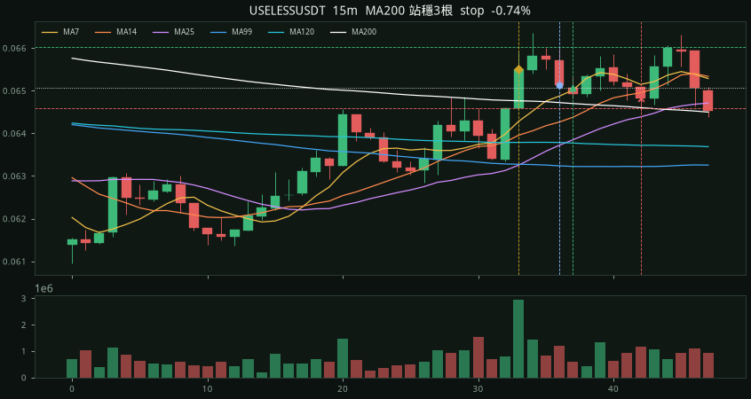
entry 0.02279 stop 0.02263 target 0.02311 exit 0.02263 stop -1.00R 記號離 200 +0.45% 進場離 200 +0.53% 記號量比 1.8× MFE +0.22% MAE -0.79% 無停損 1h -1.23% 2h +1.62%
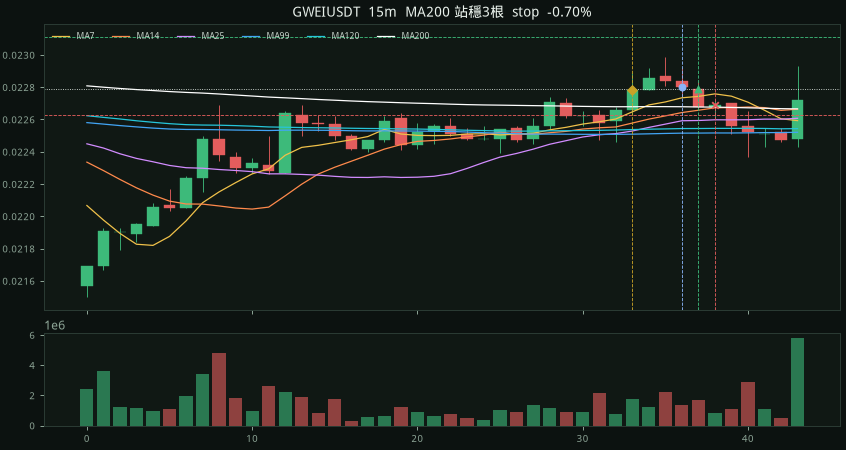
entry 0.4689 stop 0.459522 target 0.487656 exit 0.459522 stop -1.00R 記號離 200 +5.69% 進場離 200 +13.30% 記號量比 11.0× MFE +1.00% MAE -4.03% 無停損 1h -5.50% 2h -7.81%
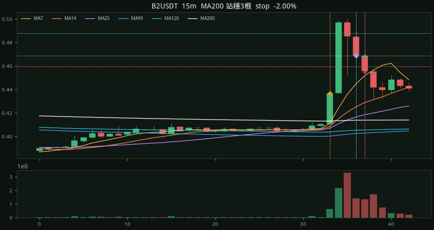
entry 0.04353 stop 0.04282 target 0.04495 exit 0.04495 target +2.00R 記號離 200 +0.24% 進場離 200 +1.40% 記號量比 1.0× MFE +3.31% MAE -0.74% 無停損 1h +0.30% 2h +0.28%
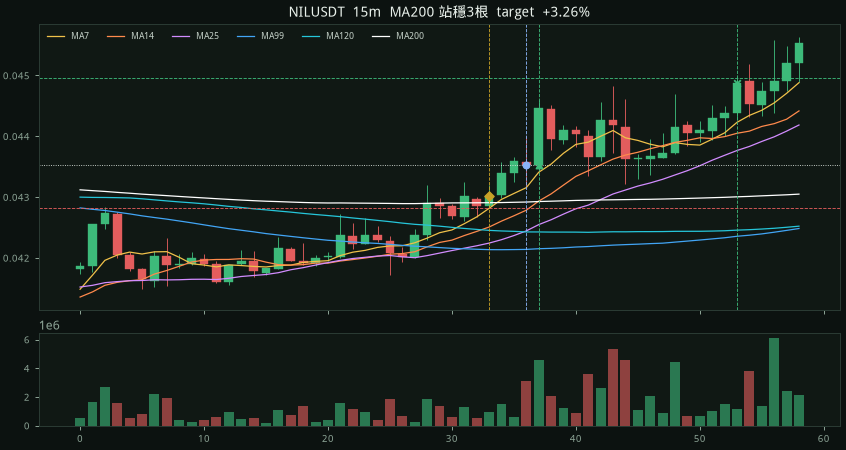
entry 1.258 stop 1.241 target 1.292 exit 1.241 stop -1.00R 記號離 200 +0.06% 進場離 200 +0.81% 記號量比 0.3× MFE +0.00% MAE -1.51% 無停損 1h -2.46% 2h -2.46%
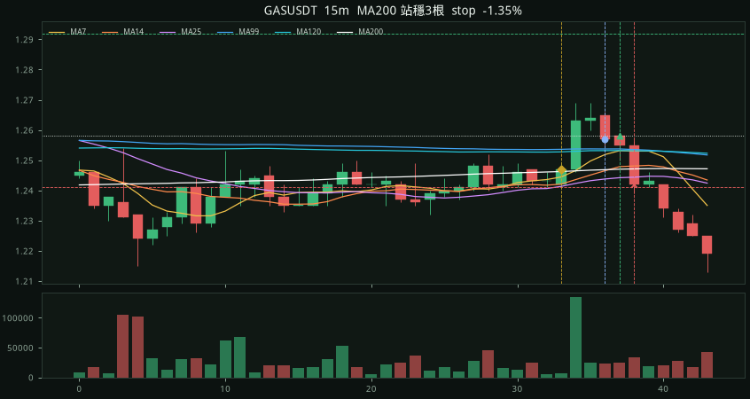
entry 0.1194 stop 0.117012 target 0.124176 exit 0.1187 time -0.29R 記號離 200 +0.47% 進場離 200 +1.75% 記號量比 2.1× MFE +2.35% MAE -1.26% 無停損 1h -0.34% 2h +1.76%
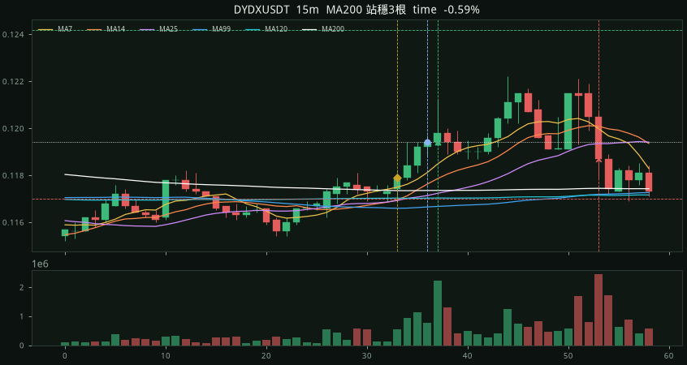
entry 0.01912 stop 0.01897 target 0.01942 exit 0.01897 stop -1.00R 記號離 200 +0.03% 進場離 200 +0.43% 記號量比 1.0× MFE +0.10% MAE -1.15% 無停損 1h -0.89% 2h +2.35%
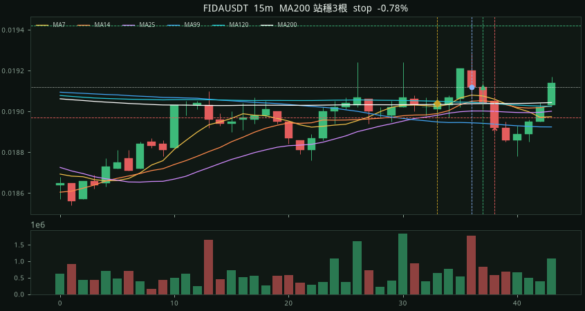
entry 35.18 stop 34.97 target 35.6 exit 34.97 stop -1.00R 記號離 200 +0.57% 進場離 200 +0.12% 記號量比 1.0× MFE +0.99% MAE -0.63% 無停損 1h +0.94% 2h +1.90%
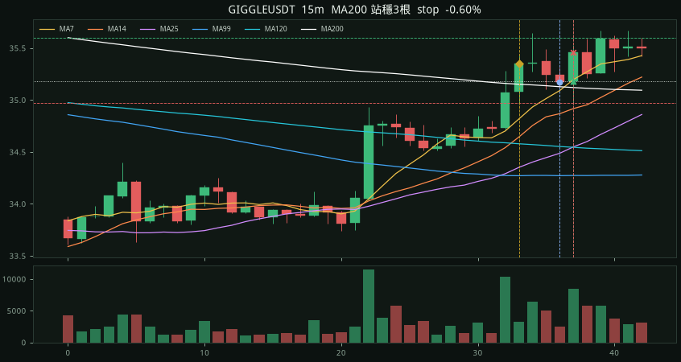
entry 261.74 stop 260.693 target 263.834 exit 261.55 time -0.18R 記號離 200 +0.26% 進場離 200 +0.01% 記號量比 8.7× MFE +0.19% MAE -0.24% 無停損 1h -0.18% 2h +0.08%
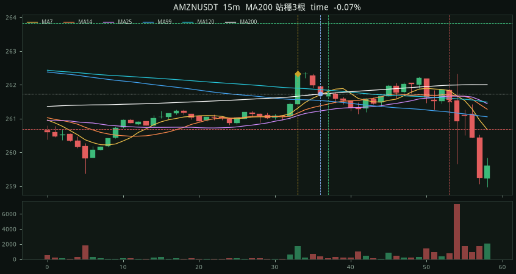
entry 4.09 stop 4.0082 target 4.2536 exit 4.0082 stop -1.00R 記號離 200 +1.97% 進場離 200 +1.72% 記號量比 0.5× MFE +0.71% MAE -2.59% 無停損 1h -2.96% 2h -2.86%
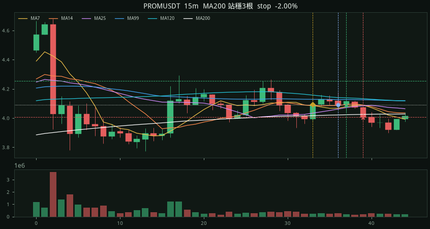
entry 67.18 stop 66.73 target 68.08 exit 66.73 stop -1.00R 記號離 200 +0.12% 進場離 200 +0.56% 記號量比 0.4× MFE +0.22% MAE -1.18% 無停損 1h -0.74% 2h -2.75%
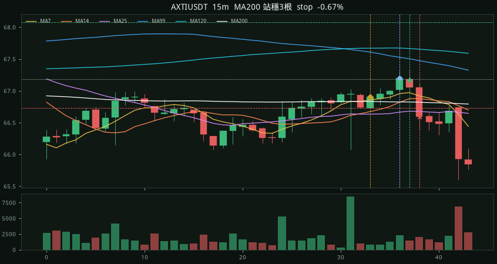
entry 310.67 stop 309.427 target 313.155 exit 309.427 stop -1.00R 記號離 200 +0.11% 進場離 200 +0.12% 記號量比 1.7× MFE +0.37% MAE -0.55% 無停損 1h +0.73% 2h +0.83%
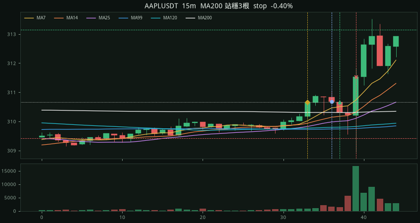
entry 0.004863 stop 0.004787 target 0.005015 exit 0.004787 stop -1.00R 記號離 200 +1.57% 進場離 200 +0.84% 記號量比 2.2× MFE +0.25% MAE -1.87% 無停損 1h -1.27% 2h -2.96%
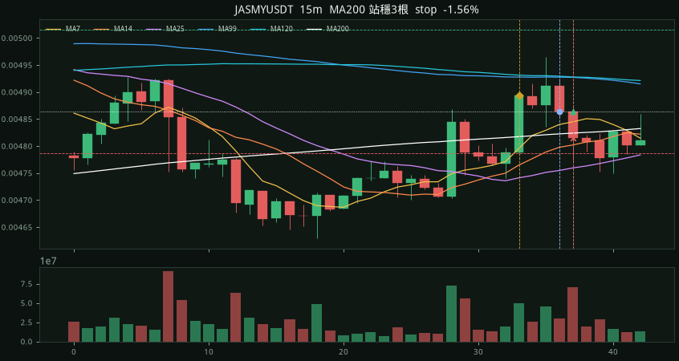
entry 0.03554 stop 0.03521 target 0.0362 exit 0.03521 stop -1.00R 記號離 200 +1.09% 進場離 200 +0.51% 記號量比 3.2× MFE +0.23% MAE -1.13% 無停損 1h -0.87% 2h -1.27%
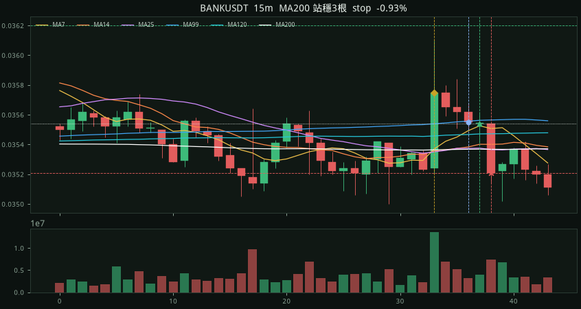
entry 493.87 stop 487.79 target 506.03 exit 494.91 eod +0.17R 記號離 200 +1.37% 進場離 200 +1.07% 記號量比 12.7× MFE +0.39% MAE -0.04% 無停損 1h +0.32% 2h +0.05%
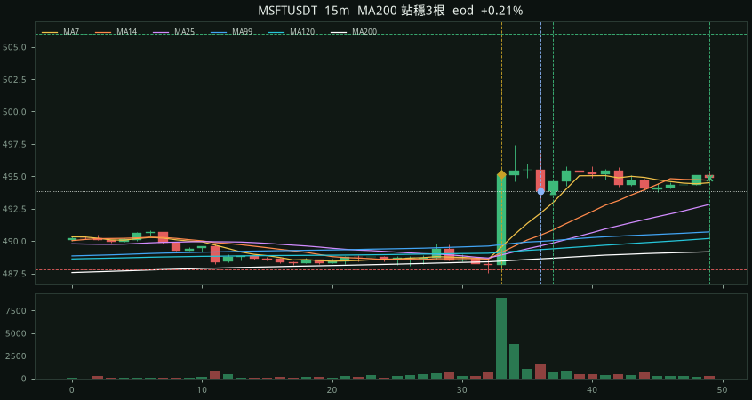
entry 577.07 stop 565.529 target 600.153 exit 579 eod +0.17R 記號離 200 +1.30% 進場離 200 +1.97% 記號量比 1.7× MFE +2.08% MAE -0.41% 無停損 1h -0.09% 2h -0.08%
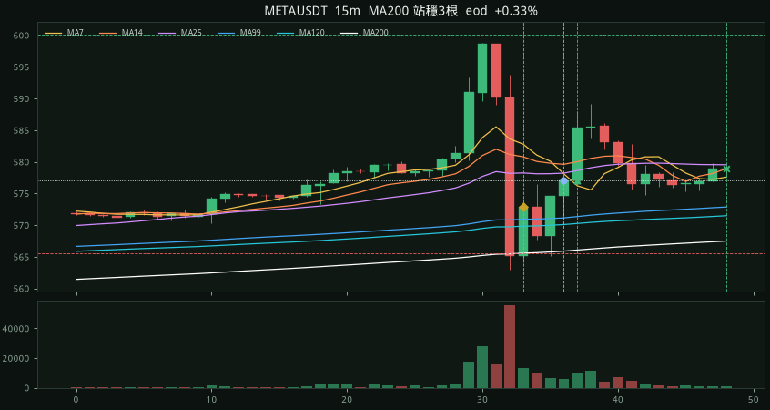
entry 174.78 stop 172.32 target 179.7 exit 176.98 eod +0.89R 記號離 200 +0.28% 進場離 200 +0.25% 記號量比 2.5× MFE +1.79% MAE -0.62% 無停損 1h +0.04% 2h +0.31%
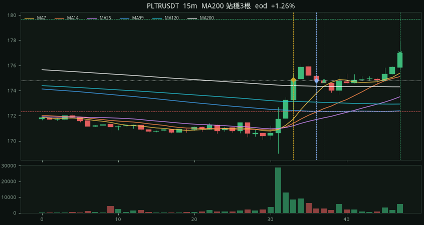
entry 0.015719 stop 0.0154046 target 0.0163478 exit 0.0154046 stop -1.00R 記號離 200 +0.23% 進場離 200 +1.01% 記號量比 0.6× MFE +2.12% MAE -2.56% 無停損 1h -0.55% 2h -0.47%
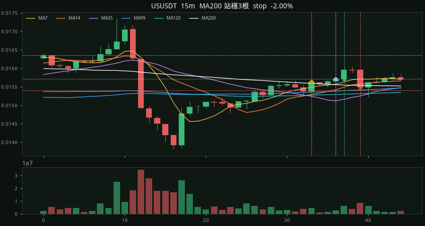
entry 24.72 stop 24.5 target 25.16 exit 25.16 target +2.00R 記號離 200 +0.22% 進場離 200 +0.32% 記號量比 1.8× MFE +1.86% MAE -0.61% 無停損 1h +0.12% 2h +0.00%
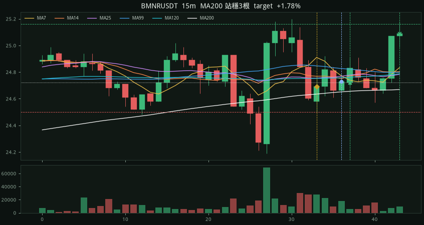
entry 0.01559 stop 0.0154 target 0.01597 exit 0.0154 stop -1.00R 記號離 200 +1.39% 進場離 200 +0.70% 記號量比 0.5× MFE +0.06% MAE -1.54% 無停損 1h -0.58% 2h +0.00%
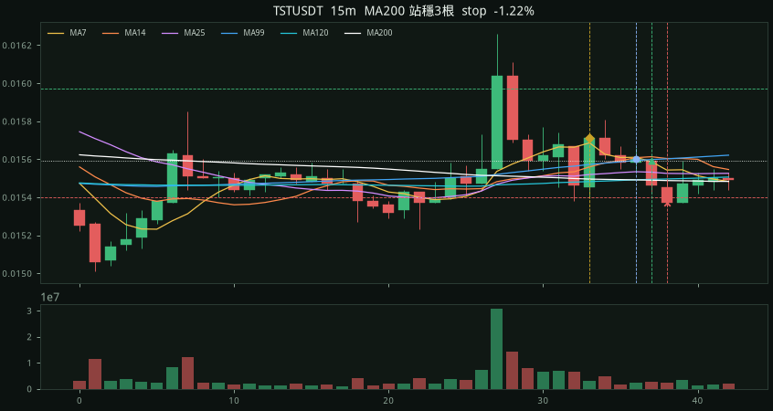
entry 13.09 stop 12.87 target 13.53 exit 13.25 eod +0.73R 記號離 200 +1.31% 進場離 200 +0.70% 記號量比 0.6× MFE +1.91% MAE -0.15% 無停損 1h +1.22% 2h +0.00%
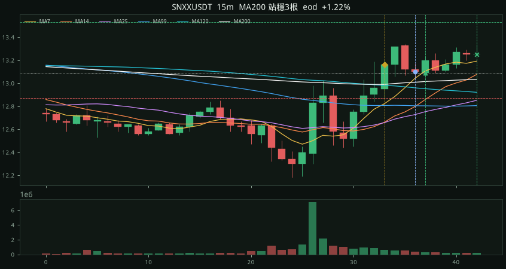
entry 174.91 stop 173.69 target 177.35 exit 177.35 target +2.00R 記號離 200 +0.25% 進場離 200 +0.33% 記號量比 1.2× MFE +1.71% MAE -0.30% 無停損 1h +1.18% 2h +0.00%
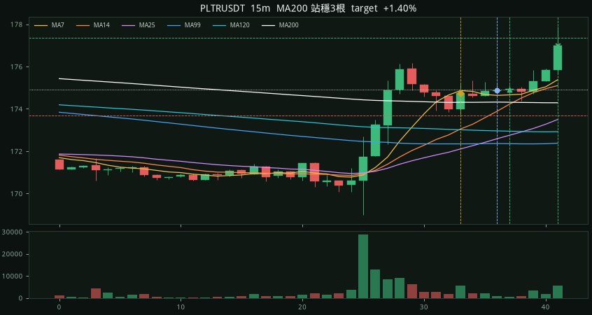
entry 82.99 stop 82.13 target 84.71 exit 82.53 eod -0.53R 記號離 200 +0.10% 進場離 200 +0.46% 記號量比 2.3× MFE +0.02% MAE -0.57% 無停損 1h +0.00% 2h +0.00%
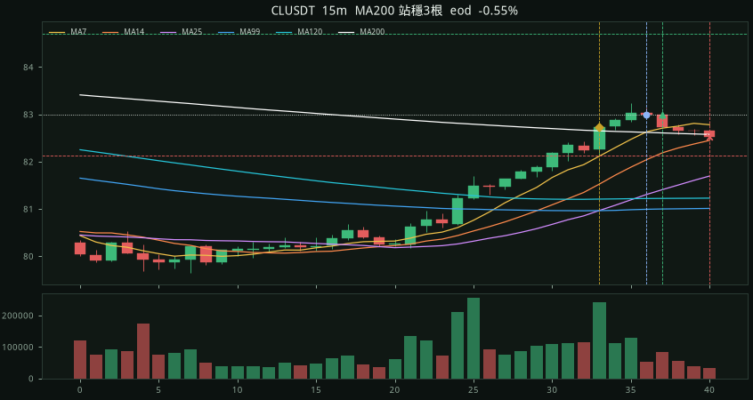
entry 0.01576 stop 0.0154448 target 0.0163904 exit 0.015645 eod -0.36R 記號離 200 +0.54% 進場離 200 +1.48% 記號量比 1.5× MFE +0.56% MAE -1.26% 無停損 1h +0.00% 2h +0.00%
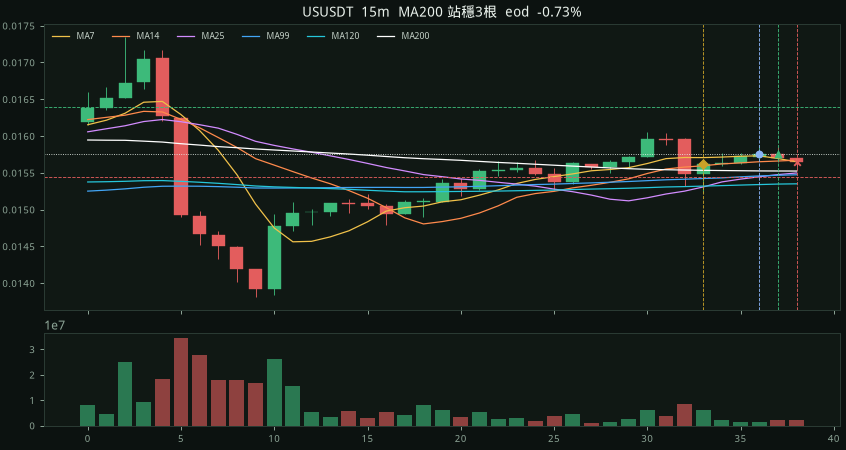
entry 246.89 stop 241.952 target 256.766 exit 248.04 eod +0.23R 記號離 200 +1.73% 進場離 200 +2.18% 記號量比 1.6× MFE +0.90% MAE +0.00% 無停損 1h +0.00% 2h +0.00%
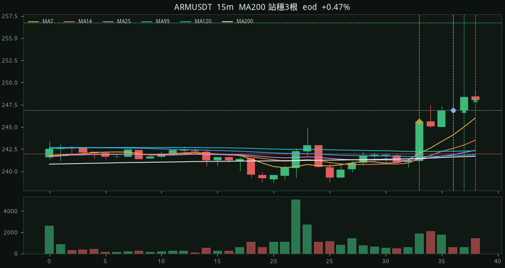